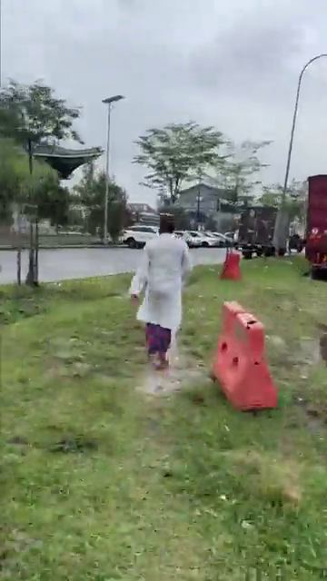
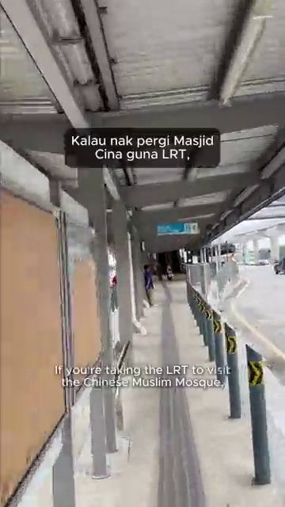

<!doctype html><html lang="en"><head><meta charset="utf-8"><meta name="viewport" content="width=device-width,initial-scale=1,viewport-fit=cover"><style>[hidden]{display:none!important}body{margin:0}img{max-width:100%}</style><title>WalkLens</title>
<meta name="claude:viewport-fit-sides" content="cover">
<link rel="preconnect" href="https://fonts.googleapis.com">
<link rel="stylesheet" href="https://fonts.googleapis.com/css2?family=Plus+Jakarta+Sans:wght@400;500;600;700;800&family=IBM+Plex+Mono:wght@400;500&display=swap">
<style>
/* Layout: resident = phone column (max 560px) with MyJalan-style bottom tabs; admin = wide console (max 1100px) with top tabs. Map + video player are shared components. */
:root{
  --bg:#F7F4F4; --surface:#FFFFFF; --sunk:#F1ECEC; --line:#E8E1E2;
  --fg:#1E1416; --muted:#5E5256; --faint:#76696D;
  --brand:#D42A3B; --brand-ink:#FFFFFF; --brand-soft:#FDECEE;
  --accent:#D42A3B; --accent-soft:#FDECEE;
  --danger:#B42318; --danger-soft:#FCE5E2; --warn:#975700; --warn-soft:#FBEFD6; --ok:#1E7A4C; --ok-soft:#DDF1E5;
  --road:#C6CEC9; --road-main:#B3BCB7; --block:#DCE3DF; --map:#EEF2EE; --park:#CFE5C8; --water:#BFDDEA; --rail:#5B4BB5; --you:#1D6FD8; --unpaved:#DCCDB0;
  --font:"Plus Jakarta Sans",ui-sans-serif,system-ui,"Segoe UI",sans-serif; --mono:"IBM Plex Mono",ui-monospace,Menlo,monospace;
  --r:20px; --ease:cubic-bezier(.2,.7,.2,1);
}
/* Light is the default; dark applies only when the viewer explicitly picks it. */
@media not all{:root{
  --bg:#151011; --surface:#1F1719; --sunk:#291F21; --line:#3A2E31;
  --fg:#F5EDEE; --muted:#BDADB0; --faint:#A29397;
  --brand:#FF5A68; --brand-ink:#2A0709; --brand-soft:#3B1A1F;
  --accent:#FF5A68; --accent-soft:#3B1A1F;
  --danger:#F2867B; --danger-soft:#3A1C19; --warn:#E9B45C; --warn-soft:#352914; --ok:#6BCB95; --ok-soft:#17321F;
  --road:#3A4946; --road-main:#4A5B57; --block:#24312F; --map:#1A2523; --park:#1F3A27; --water:#1E3A48; --rail:#9D90F0; --you:#5EA2FF; --unpaved:#3B3426; color-scheme:dark}}
:root[data-theme="dark"]{
  --bg:#151011; --surface:#1F1719; --sunk:#291F21; --line:#3A2E31;
  --fg:#F5EDEE; --muted:#BDADB0; --faint:#A29397;
  --brand:#FF5A68; --brand-ink:#2A0709; --brand-soft:#3B1A1F;
  --accent:#FF5A68; --accent-soft:#3B1A1F;
  --danger:#F2867B; --danger-soft:#3A1C19; --warn:#E9B45C; --warn-soft:#352914; --ok:#6BCB95; --ok-soft:#17321F;
  --road:#3A4946; --road-main:#4A5B57; --block:#24312F; --map:#1A2523; --park:#1F3A27; --water:#1E3A48; --rail:#9D90F0; --you:#5EA2FF; --unpaved:#3B3426; color-scheme:dark}
*{box-sizing:border-box}
body{background:var(--bg);color:var(--fg);font-family:var(--font);font-size:15px;line-height:1.5}
h1,h2,h3{margin:0;text-wrap:balance;line-height:1.2}
h1{font-size:1.5rem;font-weight:800} h2{font-size:1.15rem;font-weight:800} h3{font-size:1rem;font-weight:700}
p{margin:0}
.muted{color:var(--muted)} .faint{color:var(--faint);font-size:.85rem}
.mono{font-family:var(--mono);font-variant-numeric:tabular-nums}
button,select,input,textarea{font:inherit;color:inherit}
button{cursor:pointer}
:focus-visible{outline:2px solid var(--brand);outline-offset:2px}
.wrap{margin:0 auto;padding-left:max(16px,env(safe-area-inset-left,0px));padding-right:max(16px,env(safe-area-inset-right,0px))}
.wrap.res{max-width:560px} .wrap.adm{max-width:1100px}
.btn{border:1px solid var(--line);background:var(--surface);border-radius:10px;padding:.55rem .95rem;font-weight:700;min-height:42px;display:inline-flex;align-items:center;justify-content:center;gap:6px}
.btn:hover{border-color:var(--brand)}
.btn.primary{background:var(--brand);color:var(--brand-ink);border-color:var(--brand)}
.btn.accent{background:var(--accent);color:#fff;border-color:var(--accent)}
.btn.sm{min-height:34px;padding:.3rem .7rem;font-size:.85rem}
.btn.ghost{background:transparent}
.btn.block{width:100%}
input[type=text],input[type=search],select,textarea{border:1px solid var(--line);background:var(--surface);border-radius:10px;padding:.55rem .75rem;min-height:42px;width:100%}
textarea{min-height:90px;resize:vertical}
label{font-weight:600;font-size:.9rem}

/* chrome */
body::before{content:"";position:fixed;inset:0 0 auto;height:env(safe-area-inset-top,0px);z-index:10;background:var(--surface)}
.top{position:sticky;top:env(safe-area-inset-top,0px);z-index:5;background:var(--surface);border-bottom:1px solid var(--line)}
.top-row{display:flex;align-items:center;gap:12px;padding-block:10px;flex-wrap:wrap}
.logo{display:flex;align-items:center;gap:8px;font-weight:800;font-size:1.1rem;letter-spacing:-.01em}
.logo-mark{width:28px;height:28px;border-radius:8px;background:var(--brand);display:grid;place-items:center;flex:none}
.who{margin-left:auto;display:flex;align-items:center;gap:8px;font-size:.85rem;flex-wrap:wrap}
.role-pill{background:var(--brand-soft);color:var(--brand);font-weight:800;padding:.2rem .6rem;border-radius:999px;font-size:.72rem;letter-spacing:.06em;text-transform:uppercase}
.tabs{display:flex;gap:2px;overflow-x:auto}
.tab{border:0;background:none;padding:.6rem .8rem;font-weight:700;color:var(--muted);border-bottom:3px solid transparent;white-space:nowrap;display:flex;gap:6px;align-items:center}
.tab[aria-current="page"]{color:var(--brand);border-bottom-color:var(--brand)}
.count{background:var(--accent);color:#fff;border-radius:999px;font-size:.72rem;padding:0 .45rem;line-height:1.5}
.bnav{position:fixed;left:0;right:0;bottom:0;z-index:6;background:var(--surface);border-top:1px solid var(--line);padding-bottom:env(safe-area-inset-bottom,0px);padding-left:env(safe-area-inset-left,0px);padding-right:env(safe-area-inset-right,0px)}
.bnav-in{max-width:560px;margin:0 auto;display:grid;grid-template-columns:repeat(4,1fr)}
.bnav button{border:0;background:none;display:flex;flex-direction:column;align-items:center;gap:2px;padding:8px 0 10px;font-size:.75rem;font-weight:700;color:var(--faint);position:relative}
.bnav button[aria-current="page"]{color:var(--brand)}
.bnav .dot{position:absolute;top:6px;left:calc(50% + 8px);width:9px;height:9px;border-radius:50%;background:var(--accent)}
main{padding-block:20px 48px;display:flex;flex-direction:column;gap:16px}
main.res{padding-bottom:110px}

.panel{background:var(--surface);border:1px solid var(--line);border-radius:var(--r);padding:16px}
.head{display:flex;align-items:flex-end;justify-content:space-between;gap:12px;flex-wrap:wrap}
.grid2{display:grid;grid-template-columns:repeat(auto-fit,minmax(320px,1fr));gap:16px}
.grid2>*{min-width:0}
.kpis{display:grid;grid-template-columns:repeat(auto-fit,minmax(150px,1fr));gap:12px}
.kpi{background:var(--surface);border:1px solid var(--line);border-radius:var(--r);padding:14px 16px}
.kpi .n{font-size:1.7rem;font-weight:800;font-variant-numeric:tabular-nums;line-height:1.1}
.kpi .l{font-size:.82rem;color:var(--muted)}
.chip{display:inline-flex;align-items:center;gap:4px;font-size:.74rem;font-weight:700;padding:.12rem .5rem;border-radius:999px;white-space:nowrap}
.c-danger{background:var(--danger-soft);color:var(--danger)} .c-warn{background:var(--warn-soft);color:var(--warn)}
.c-ok{background:var(--ok-soft);color:var(--ok)} .c-brand{background:var(--brand-soft);color:var(--brand)}
.c-neutral{background:var(--sunk);color:var(--muted)} .c-accent{background:var(--accent-soft);color:var(--accent)}
.list{display:flex;flex-direction:column;gap:10px}
.route-card{display:flex;gap:14px;align-items:center;padding:14px;border:1px solid var(--line);border-radius:var(--r);background:var(--surface);text-align:left;width:100%}
.route-card:hover{border-color:var(--brand)}
.score{width:56px;height:56px;border-radius:50%;display:grid;place-items:center;font-weight:800;font-size:1.2rem;flex:none;font-variant-numeric:tabular-nums}
.hz{display:grid;grid-template-columns:30px 1fr;gap:10px;padding:12px 0;border-bottom:1px solid var(--line)}
.hz:last-child{border-bottom:0}
.num{width:26px;height:26px;border-radius:50%;display:grid;place-items:center;color:#fff;font-weight:800;font-size:.8rem}
.hz-top{display:flex;gap:6px;flex-wrap:wrap;align-items:center}
.hz-actions{display:flex;gap:6px;flex-wrap:wrap;margin-top:8px}
.tblwrap{overflow-x:auto}
table{width:100%;border-collapse:collapse;font-size:.9rem}
th{text-align:left;font-size:.72rem;letter-spacing:.06em;text-transform:uppercase;color:var(--muted);padding:8px;border-bottom:1px solid var(--line);white-space:nowrap}
td{padding:10px 8px;border-bottom:1px solid var(--line);vertical-align:top}
td.n{font-variant-numeric:tabular-nums;white-space:nowrap}
.note{font-size:.84rem;color:var(--muted);background:var(--sunk);border-radius:10px;padding:10px 12px}
.empty{padding:24px;text-align:center;color:var(--muted)}
.toast{position:fixed;left:50%;bottom:calc(84px + env(safe-area-inset-bottom,0px));transform:translateX(-50%);background:var(--fg);color:var(--bg);padding:.6rem 1rem;border-radius:10px;font-weight:600;z-index:20;max-width:calc(100% - 32px)}

/* forms (MyJalan-style cards) */
.fcard{background:var(--surface);border:1px solid var(--line);border-radius:var(--r);padding:16px;display:flex;flex-direction:column;gap:10px}
.locrow{display:flex;border:1px solid var(--line);border-radius:10px;overflow:hidden}
.locrow input{border:0;border-radius:0;min-width:0;flex:1}
.locrow button{border:0;background:var(--brand);color:var(--brand-ink);width:52px;display:grid;place-items:center}
.drop{border:2px dashed var(--line);border-radius:10px;padding:18px;text-align:center;display:flex;flex-direction:column;gap:8px;align-items:center;background:var(--sunk)}
.steps{display:flex;flex-direction:column;gap:6px;margin-top:6px}
.step{display:flex;gap:8px;align-items:center;font-size:.9rem;color:var(--faint)}
.step.on{color:var(--fg);font-weight:600} .step.done{color:var(--ok)}
.bar{height:8px;background:var(--sunk);border-radius:99px;overflow:hidden}
.bar>i{display:block;height:100%;background:var(--brand);width:0;transition:width .4s}
.seg{display:grid;grid-template-columns:1fr 1fr;gap:8px}
.seg label{display:flex;gap:8px;align-items:flex-start;border:1px solid var(--line);border-radius:10px;padding:10px;font-weight:600;cursor:pointer}
.seg input{margin-top:3px;accent-color:var(--brand)}

/* map */
.mapbox{position:relative;border-radius:var(--r);overflow:hidden;border:1px solid var(--line);background:var(--map)}
.mapbox.tall{aspect-ratio:1/1} .mapbox.wide{aspect-ratio:16/9} .mapbox.mini{aspect-ratio:16/10}
.mapcanvas,.mapcanvas svg{position:absolute;inset:0;width:100%;height:100%;display:block;touch-action:none}
.mapcanvas svg{cursor:grab}
.m-top{position:absolute;top:10px;left:10px;right:10px;display:flex;flex-direction:column;gap:8px;z-index:2;pointer-events:none}
.m-top>*{pointer-events:auto}
.msearch{position:relative}
.msearch input{padding-left:36px;box-shadow:0 1px 3px rgba(0,0,0,.12)}
.msearch svg{position:absolute;left:11px;top:50%;transform:translateY(-50%)}
.mresults{position:absolute;left:0;right:0;top:46px;background:var(--surface);border:1px solid var(--line);border-radius:10px;overflow:hidden;box-shadow:0 4px 14px rgba(0,0,0,.15)}
.mresults button{display:block;width:100%;text-align:left;border:0;background:none;padding:10px 12px;border-bottom:1px solid var(--line)}
.mresults button:hover{background:var(--sunk)}
.layers{display:flex;gap:6px;flex-wrap:wrap}
.layer{display:inline-flex;align-items:center;gap:6px;border:1px solid var(--line);background:var(--surface);border-radius:999px;padding:.3rem .7rem;font-weight:700;font-size:.82rem;box-shadow:0 1px 3px rgba(0,0,0,.1)}
.layer[aria-pressed="false"]{opacity:.55}
.layer i{width:10px;height:10px;border-radius:50%;display:block}
.m-ctl{position:absolute;right:10px;bottom:10px;display:flex;flex-direction:column;gap:8px;z-index:2}
.m-ctl button{width:44px;height:44px;border-radius:50%;border:1px solid var(--line);background:var(--surface);display:grid;place-items:center;font-size:1.3rem;font-weight:700;box-shadow:0 1px 4px rgba(0,0,0,.15)}
.m-ctl button.loc{background:var(--brand);border-color:var(--brand)}
.m-badge{position:absolute;left:10px;bottom:10px;z-index:2;background:var(--surface);border:1px solid var(--line);border-radius:999px;padding:.2rem .6rem;font-size:.72rem;color:var(--muted)}
.sheet{display:flex;flex-direction:column;gap:10px}

/* player */
.player{display:flex;flex-direction:column;gap:8px}
.screen{position:relative;aspect-ratio:16/9;background:#0E1513;border-radius:var(--r);overflow:hidden}
.screen.portrait{aspect-ratio:9/16;width:min(100%,340px);margin:0 auto}
.screen svg,.screen video{position:absolute;inset:0;width:100%;height:100%;display:block;object-fit:cover}
.ovl{position:absolute;inset:0;pointer-events:none}
.aibox{position:absolute;border:3px solid #FF5A4E;border-radius:6px;box-shadow:0 0 0 2px rgba(0,0,0,.35)}
.aibox.w{border-color:#FFB020}
.aibox span{position:absolute;left:-3px;bottom:100%;margin-bottom:4px;background:#FF5A4E;color:#fff;font-size:.72rem;font-weight:800;padding:2px 6px;border-radius:4px;white-space:nowrap}
.aibox.w span{background:#FFB020;color:#2A1A00}
.aibox.r span{left:auto;right:-3px}
.pbar{display:flex;align-items:center;gap:10px}
.pbar .pp svg{pointer-events:none}
.pbar .pp{width:42px;height:42px;border-radius:50%;border:0;background:var(--brand);color:var(--brand-ink);display:grid;place-items:center;flex:none}
.ptrack{position:relative;flex:1;height:34px}
.ptrack input{position:absolute;inset:0;width:100%;margin:0;accent-color:var(--brand);height:34px}
.mark{position:absolute;top:-6px;width:14px;height:14px;border-radius:50%;border:2px solid var(--surface);transform:translateX(-50%);padding:0;z-index:1}
.ptime{font-family:var(--mono);font-size:.82rem;color:var(--muted);white-space:nowrap}
.jumps{display:flex;gap:6px;flex-wrap:wrap}

/* login, before/after, misc */
.login{padding-block:40px;display:grid;place-items:center}
.login-card{max-width:520px;width:100%;display:flex;flex-direction:column;gap:16px}
.acct{display:flex;gap:14px;align-items:center;padding:16px;border:1px solid var(--line);border-radius:var(--r);background:var(--surface);text-align:left;width:100%}
.acct:hover{border-color:var(--brand)}
.avatar{width:44px;height:44px;border-radius:50%;display:grid;place-items:center;font-weight:800;flex:none}
.ba{display:grid;grid-template-columns:repeat(auto-fit,minmax(220px,1fr));gap:12px}
.ba figure{margin:0;display:flex;flex-direction:column;gap:6px}
.ba figcaption{font-size:.78rem;font-weight:800;color:var(--muted);text-transform:uppercase;letter-spacing:.06em}
.ba svg{width:100%;height:auto;border-radius:8px}
.persona{display:flex;gap:8px;align-items:flex-start;padding:10px 12px;border:1px solid var(--line);border-radius:10px;background:var(--surface)}
.persona input{width:18px;height:18px;accent-color:var(--brand);margin-top:2px}
.form-row{display:grid;grid-template-columns:repeat(auto-fit,minmax(200px,1fr));gap:10px}
.field{display:flex;flex-direction:column;gap:4px}
.bars-h{display:flex;flex-direction:column;gap:8px}
.bh{display:grid;grid-template-columns:minmax(90px,170px) 1fr 36px;gap:10px;align-items:center;font-size:.88rem;width:100%}
.bh .track{height:14px;background:var(--sunk);border-radius:4px;overflow:hidden}
.bh .track i{display:block;height:100%;border-radius:4px}
.bh>span:first-child{overflow:hidden;text-overflow:ellipsis;white-space:nowrap}
.hero{background:var(--brand);color:var(--brand-ink);border-radius:var(--r);padding:18px;display:flex;flex-direction:column;gap:10px}
.hero .btn{align-self:flex-start;background:var(--brand-ink);color:var(--brand);border-color:var(--brand-ink)}
.mini3{display:grid;grid-template-columns:repeat(3,1fr);gap:10px}
.mini3 .kpi .n{font-size:1.4rem}
/* ---- red and white refresh: soft cards, floating pill nav, gentle motion ---- */
body{background-image:radial-gradient(70% 320px at 50% -60px,color-mix(in srgb,var(--brand) 11%,transparent),transparent);background-repeat:no-repeat}
h1{font-size:1.7rem;letter-spacing:-.025em} h2{letter-spacing:-.015em}
body::before{background:var(--bg)}
.top{background:color-mix(in srgb,var(--bg) 82%,transparent);backdrop-filter:blur(14px);-webkit-backdrop-filter:blur(14px);border-bottom:1px solid color-mix(in srgb,var(--line) 70%,transparent)}
.logo-mark{width:32px;height:32px;border-radius:11px;background:linear-gradient(135deg,#EC4656,#B81D2E);color:#fff!important;box-shadow:0 6px 14px -6px rgba(212,42,59,.7)}
.role-pill{background:var(--brand-soft);color:var(--brand)}

.btn{border-radius:14px;min-height:46px;transition:transform .18s var(--ease),box-shadow .25s,background .2s,border-color .2s}
.btn:hover{transform:translateY(-1px)} .btn:active{transform:scale(.97)}
.btn.sm{min-height:36px;border-radius:12px}
.btn.primary,.btn.accent{background:var(--brand);border-color:var(--brand);color:var(--brand-ink);box-shadow:0 8px 18px -8px color-mix(in srgb,var(--brand) 75%,transparent)}
input[type=text],input[type=search],select,textarea{border-radius:14px;min-height:46px;transition:border-color .2s,box-shadow .2s}
input:focus,select:focus,textarea:focus{outline:none;border-color:var(--brand);box-shadow:0 0 0 4px var(--brand-soft)}

.panel,.kpi,.fcard,.route-card,.acct,.persona{border-color:transparent;box-shadow:0 1px 2px rgba(60,15,22,.05),0 10px 28px -14px rgba(60,15,22,.18)}
.route-card,.acct{transition:transform .22s var(--ease),box-shadow .25s}
.route-card:hover,.acct:hover{transform:translateY(-2px);box-shadow:0 14px 30px -14px rgba(212,42,59,.35)}
.kpi{padding:16px 18px}
.score{box-shadow:inset 0 0 0 3px rgba(255,255,255,.55)}
.chip{padding:.18rem .6rem}
.note{border-radius:14px}
.mapbox,.screen{border-radius:20px}
.layer{transition:opacity .2s,transform .15s} .layer:active{transform:scale(.95)}
.m-ctl button{transition:transform .15s} .m-ctl button:active{transform:scale(.92)}
.locrow{border-radius:14px}
.seg label{border-radius:14px;transition:border-color .2s,background .2s}
.seg label:has(input:checked){border-color:var(--brand);background:var(--brand-soft)}

.hero{position:relative;overflow:hidden;color:#fff;background:linear-gradient(140deg,#E5404F 0%,#C42033 55%,#A3162A 100%);padding:22px;gap:12px;box-shadow:0 18px 34px -18px rgba(196,32,51,.7)}
.hero::after{content:"";position:absolute;right:-50px;top:-60px;width:190px;height:190px;border-radius:50%;background:rgba(255,255,255,.12)}
.hero::before{content:"";position:absolute;right:40px;bottom:-70px;width:130px;height:130px;border-radius:50%;background:rgba(255,255,255,.08)}
.hero>*{position:relative;z-index:1}
.hero p{max-width:34ch;opacity:.92}
.hero .btn{background:#fff;color:#B81D2E;border-color:#fff;box-shadow:0 8px 18px -8px rgba(0,0,0,.35)}

/* admin tabs become pills */
.tabs{gap:6px;padding-bottom:10px}
.tab{border:0;border-radius:999px;padding:.45rem .95rem;transition:background .2s,color .2s}
.tab:hover{background:var(--sunk)}
.tab[aria-current="page"]{background:var(--brand);color:var(--brand-ink)}
.tab[aria-current="page"] .count{background:#fff;color:#B81D2E}

/* floating pill bottom nav: icon circles, active one shows its label */
.bnav{background:none;border:0;padding:0 max(16px,env(safe-area-inset-left,0px)) calc(12px + env(safe-area-inset-bottom,0px)) max(16px,env(safe-area-inset-right,0px));pointer-events:none}
.bnav-in{display:flex;justify-content:center;gap:12px;width:fit-content;max-width:100%;padding:8px 14px;background:var(--surface);border:1px solid var(--line);border-radius:999px;box-shadow:0 14px 34px -10px rgba(60,15,22,.3);pointer-events:auto;max-width:420px}
.bnav button{flex-direction:row;justify-content:center;font-size:0;gap:0;width:46px;height:46px;flex:none;padding:0;border-radius:999px;background:var(--sunk);color:var(--muted);transition:background .2s,transform .15s}
.bnav button:active{transform:scale(.92)}
.bnav button[aria-current="page"]{background:var(--brand);color:var(--brand-ink);animation:navpop .35s var(--ease)}
.bnav .dot{top:9px;left:auto;right:11px;border:2px solid var(--surface)}
.toast{bottom:calc(96px + env(safe-area-inset-bottom,0px));border-radius:14px}
main.res{padding-bottom:120px}

/* photography: stills from the real walk video */
img{display:block}
.hero.photo{min-height:200px;justify-content:flex-end;background:linear-gradient(180deg,rgba(150,18,36,.35) 0%,rgba(150,18,36,.88) 78%),var(--img) center 35%/cover;background-color:#B81D2E}
.hero.photo::before,.hero.photo::after{display:none}
.rthumb{position:relative;flex:none;width:92px;height:122px;border-radius:18px;overflow:hidden;background:#222}
.rthumb img,.rthumb video{width:100%;height:100%;object-fit:cover;pointer-events:none}
.rthumb .score{position:absolute;right:5px;top:5px;width:32px;height:32px;font-size:.82rem;box-shadow:0 2px 6px rgba(0,0,0,.25);border:2px solid #fff}
.rthumb .play{position:absolute;left:5px;bottom:5px;display:inline-flex;align-items:center;gap:4px;font-style:normal;font-size:.7rem;font-weight:700;color:#fff;background:rgba(20,10,12,.6);backdrop-filter:blur(4px);padding:3px 8px;border-radius:999px;font-variant-numeric:tabular-nums}
.rthumb .play svg{width:9px;height:9px}
.hscroll{display:flex;gap:12px;overflow-x:auto;scroll-snap-type:x mandatory;padding:2px 2px 12px;margin-inline:-2px;scrollbar-width:none}
.hscroll::-webkit-scrollbar{display:none}
.rcard{flex:none;width:148px;scroll-snap-align:start;display:flex;flex-direction:column;gap:3px;text-align:left;border:0;background:var(--surface);border-radius:18px;padding:8px 8px 12px;box-shadow:0 1px 2px rgba(60,15,22,.05),0 10px 26px -14px rgba(60,15,22,.22);transition:transform .22s var(--ease)}
.rcard:hover{transform:translateY(-2px)}
.rcard strong{padding:6px 4px 0;font-size:.9rem;line-height:1.25}
.rcard .faint{padding:0 4px;font-size:.78rem}
.rcard-img{position:relative;display:block;aspect-ratio:3/4;border-radius:12px;overflow:hidden;background:var(--sunk)}
.rcard-img img,.rcard-img video{width:100%;height:100%;object-fit:cover;pointer-events:none}
.rcard-img.blank{background:linear-gradient(160deg,var(--sunk),color-mix(in srgb,var(--line) 80%,var(--sunk)))}
.rcard-img .play{position:absolute;left:6px;bottom:6px;display:inline-flex;align-items:center;gap:4px;font-style:normal;font-size:.7rem;font-weight:700;color:#fff;background:rgba(20,10,12,.6);padding:3px 8px;border-radius:999px}
.rcard-img .play svg{width:9px;height:9px}
.rcard-img.blank .play{background:rgba(20,10,12,.35)}
.rcard-img .chip{position:absolute;left:6px;top:6px;backdrop-filter:blur(4px)}
main>*{min-width:0}
.pcard{flex:none;width:224px;scroll-snap-align:start;display:flex;flex-direction:column;gap:3px;text-align:left;border:0;background:var(--surface);border-radius:20px;padding:8px 8px 14px;box-shadow:0 1px 2px rgba(60,15,22,.05),0 10px 26px -14px rgba(60,15,22,.22);transition:transform .22s var(--ease)}
.pcard:hover{transform:translateY(-2px)}
.pcard.big{width:100%}
.pcard strong{padding:8px 6px 0;line-height:1.3}
.pcard .faint{padding:0 6px}
.pvid{position:relative;display:block;aspect-ratio:4/5;border-radius:14px;overflow:hidden;background:#222}
.pcard.big .pvid{aspect-ratio:16/10}
.pvid video{width:100%;height:100%;object-fit:cover;object-position:center 45%;pointer-events:none}
.pvid.blank{background:linear-gradient(160deg,var(--sunk),color-mix(in srgb,var(--line) 80%,var(--sunk)))}
.pvid .play{position:absolute;left:8px;bottom:8px;display:inline-flex;align-items:center;gap:4px;font-style:normal;font-size:.72rem;font-weight:700;color:#fff;background:rgba(20,10,12,.6);backdrop-filter:blur(4px);padding:3px 9px;border-radius:999px;font-variant-numeric:tabular-nums}
.pvid.blank .play{background:rgba(20,10,12,.35)}
.pvid .play svg{width:9px;height:9px}
.pvid .score{position:absolute;right:8px;top:8px;width:36px;height:36px;font-size:.9rem;border:2px solid #fff;box-shadow:0 2px 6px rgba(0,0,0,.25)}
.sample-box{width:min(100%,280px);aspect-ratio:9/16;margin:0 auto}
.hz-img{float:right;width:84px;height:84px;object-fit:cover;object-position:center 60%;border-radius:14px;margin:0 0 8px 12px}
.hz-actions{clear:both}
.sheet-img{width:100%;height:170px;object-fit:cover;object-position:center 62%;border-radius:14px}
.tbl-img{float:left;width:52px;height:52px;object-fit:cover;object-position:center 60%;border-radius:10px;margin:0 10px 0 0}
.collage{display:grid;grid-template-columns:1.2fr 1fr 1fr;grid-template-rows:100%;gap:8px;height:190px;flex:none}
.collage img{width:100%;height:100%;min-height:0;object-fit:cover;border-radius:18px;box-shadow:0 10px 24px -14px rgba(60,15,22,.45)}
.collage img:nth-child(2){margin-top:22px;height:calc(100% - 22px)}
.collage img:nth-child(3){margin-top:-0px}

/* navigate */
.kbtn{border:0;text-align:left;font:inherit;color:inherit;cursor:pointer}
.navform{display:flex;flex-direction:column;gap:10px}
.navform .swap{align-self:flex-start}
.modes{display:flex;gap:6px;flex-wrap:wrap}
.mchip{border:1px solid var(--line);background:var(--surface);border-radius:999px;padding:.35rem .8rem;font-weight:700;font-size:.82rem;color:var(--muted);transition:background .2s,color .2s,border-color .2s}
.mchip[aria-pressed="true"]{background:var(--brand-soft);border-color:var(--brand);color:var(--brand)}
.arrive{display:flex;gap:10px;align-items:flex-end;flex-wrap:wrap}
.arrive .field{width:150px}
.ncards{display:grid;grid-template-columns:1fr 1fr;gap:10px}
.ncards.one{grid-template-columns:1fr}
.ncard{background:var(--surface);border-radius:var(--r);padding:14px;display:flex;flex-direction:column;gap:6px;min-width:0;box-shadow:0 1px 2px rgba(60,15,22,.05),0 10px 28px -14px rgba(60,15,22,.18);border:2px solid transparent}
.ncard.safest{border-color:var(--ok)}
.ncard-top{display:flex;justify-content:space-between;align-items:center}
.ncard .score{width:40px;height:40px;font-size:.95rem}
.eta{font-size:.9rem;color:var(--muted)} .eta b{font-size:1.8rem;color:var(--fg);font-weight:800}
.nstats{display:grid;grid-template-columns:repeat(3,1fr);gap:4px;margin:0}
.nstats div{min-width:0} .nstats dt{font-size:.68rem;color:var(--faint);text-transform:uppercase;letter-spacing:.04em} .nstats dd{margin:0;font-weight:800;font-variant-numeric:tabular-nums;font-size:.9rem}
.why{font-weight:600;font-size:.88rem;line-height:1.35}
.ncard-act{display:flex;gap:6px;flex-wrap:wrap;margin-top:auto}
.transit{display:flex;flex-direction:column;gap:8px}
.trow{display:grid;grid-template-columns:auto 1fr auto;gap:4px 10px;align-items:center}
.trow .faint{grid-column:2/4}
@media (max-width:380px){.ncards{grid-template-columns:1fr}}

/* walk session */
.walkhead{display:flex;flex-direction:column;gap:8px}
.wstats,.sumgrid{display:grid;grid-template-columns:repeat(2,1fr);gap:10px}
.sumgrid{grid-template-columns:repeat(auto-fit,minmax(140px,1fr))}
.up{display:flex;gap:10px;align-items:flex-start}
.up .chip{flex:none;font-variant-numeric:tabular-nums}
.est{font-size:.68rem;font-weight:700;color:var(--faint);text-transform:uppercase;letter-spacing:.05em}
.kpi.good .n{color:var(--ok)} .kpi.pts .n{color:var(--brand)}
.done{display:flex;flex-direction:column;gap:6px}
.week .mini3>div .n{font-size:1.25rem;font-weight:800}
.week .mini3>div .l{font-size:.78rem;color:var(--muted)}
.week{display:flex;flex-direction:column;gap:12px}
.settings{display:flex;flex-direction:column;gap:8px}

/* community feed */
.rep{background:var(--surface);border-radius:var(--r);padding:14px;display:flex;flex-direction:column;gap:12px;box-shadow:0 1px 2px rgba(60,15,22,.05),0 10px 28px -14px rgba(60,15,22,.18)}
.rep-head{display:flex;gap:12px;align-items:flex-start}
.rep-head img{flex:none;width:92px;height:92px;border-radius:14px;object-fit:cover;object-position:center 60%}
.rep h3{margin:4px 0 2px}
.tl{list-style:none;margin:0;padding:0;display:grid;grid-template-columns:repeat(5,1fr);position:relative}
.tl::before{content:"";position:absolute;left:10%;right:10%;top:6px;height:2px;background:var(--line)}
.tl li{display:flex;flex-direction:column;align-items:center;text-align:center;gap:2px;position:relative;min-width:0}
.tl .dot{width:14px;height:14px;border-radius:50%;background:var(--surface);border:2px solid var(--line)}
.tl li.done .dot{background:var(--ok);border-color:var(--ok)}
.tl li.now .dot{background:var(--brand);border-color:var(--brand);box-shadow:0 0 0 4px var(--brand-soft)}
.tl-l{font-size:.66rem;font-weight:700;line-height:1.15;color:var(--muted)}
.tl li.now .tl-l{color:var(--brand)}
.tl-d{font-size:.64rem;color:var(--faint);font-variant-numeric:tabular-nums;min-height:1em}
.react{display:flex;gap:6px;flex-wrap:wrap}
.rbtn{display:inline-flex;align-items:center;gap:6px;border:1px solid var(--line);background:var(--surface);border-radius:999px;padding:.35rem .75rem;font-weight:700;font-size:.8rem;color:var(--fg);min-height:36px}
.rbtn b{font-variant-numeric:tabular-nums;color:var(--muted)}
.rbtn[aria-pressed="true"]{background:var(--brand-soft);border-color:var(--brand);color:var(--brand)}
.rbtn[aria-pressed="true"] b{color:var(--brand)}
.rbtn svg{width:12px;height:12px}
.cmts{display:flex;flex-direction:column;gap:8px;background:var(--sunk);border-radius:14px;padding:10px 12px;font-size:.88rem}
.cmt-form{display:flex;gap:6px} .cmt-form input{flex:1;min-width:0}

/* snap */
.hero .btn.ghost-light{background:rgba(255,255,255,.16);color:#fff;border-color:rgba(255,255,255,.55);box-shadow:none}
.hero{flex-wrap:wrap} .hero>.btn{align-self:flex-start}
.snap-drop{display:flex;flex-direction:column;gap:10px;align-items:flex-start}
.snap-samples{display:flex;gap:8px}
.snap-sample{border:2px solid transparent;border-radius:14px;padding:0;overflow:hidden;width:76px;height:100px;background:var(--sunk)}
.snap-sample:hover,.snap-sample:focus-visible{border-color:var(--brand)}
.snap-sample img{width:100%;height:100%;object-fit:cover}
.snap-res{display:flex;flex-direction:column;gap:10px}
.snap-img{width:100%;max-height:300px;object-fit:cover;border-radius:14px}
.snapdl{margin:0;display:grid;gap:8px} .snapdl dt{font-size:.72rem;color:var(--faint);text-transform:uppercase;letter-spacing:.05em} .snapdl dd{margin:0;font-weight:700}
@keyframes indet{from{transform:translateX(-100%)}to{transform:translateX(250%)}}
.bar>i.indet{width:40%;animation:indet 1.1s ease-in-out infinite}

/* motion: views rise in once per navigation; nothing loops */
@keyframes rise{from{opacity:0;transform:translateY(12px)}to{opacity:1;transform:none}}
@keyframes navpop{from{transform:scale(.88)}to{transform:none}}
@keyframes grow{from{transform:scaleX(0)}to{transform:none}}
@keyframes toastin{from{opacity:0;transform:translate(-50%,8px)}to{opacity:1;transform:translate(-50%,0)}}
main.enter>*,.login-card>*{animation:rise .45s var(--ease) both}
main.enter>:nth-child(2),.login-card>:nth-child(2){animation-delay:.05s}
main.enter>:nth-child(3),.login-card>:nth-child(3){animation-delay:.1s}
main.enter>:nth-child(4),.login-card>:nth-child(4){animation-delay:.15s}
main.enter>:nth-child(5),.login-card>:nth-child(5){animation-delay:.2s}
main.enter>:nth-child(n+6),.login-card>:nth-child(n+6){animation-delay:.25s}
main.enter .bh .track i{transform-origin:left;animation:grow .8s var(--ease) .2s both}
.toast:not([hidden]){animation:toastin .28s var(--ease)}
@media (prefers-reduced-motion: reduce){*{transition:none!important;animation:none!important}}
</style>

</head><body><div id="app"></div>
<div id="toast" class="toast" hidden></div>

<script>
(function(){
"use strict";
const KEY="walklens-demo-v3";
const $=s=>document.querySelector(s);
const esc=s=>String(s).replace(/[&<>"']/g,c=>({"&":"&amp;","<":"&lt;",">":"&gt;",'"':"&quot;","'":"&#39;"}[c]));

/* ---------- reference data ---------- */
const LIB=[
 {type:"walkway",short:"Walkway ends",title:"Walkway ends, walkers forced onto road",sev:"danger",fix:"Extend covered walkway (about 200 m)",cost:180000},
 {type:"crossing",short:"No crossing",title:"No crossing over 4-lane road",sev:"danger",fix:"Signalised zebra crossing",cost:120000},
 {type:"shade",short:"No shade",title:"Long stretch with no shade",sev:"warn",fix:"Shade trees and canopy",cost:60000},
 {type:"ramp",short:"No kerb ramp",title:"Kerb with no ramp",sev:"warn",fix:"Two kerb ramps",cost:8000},
 {type:"light",short:"Lights out",title:"Broken or missing street lights",sev:"warn",fix:"Replace 6 street lights",cost:30000},
 {type:"drain",short:"Open drain",title:"Open drain beside the path",sev:"danger",fix:"Cover drain with grating",cost:45000},
 {type:"blocked",short:"Path blocked",title:"Path blocked by parked motorcycles",sev:"warn",fix:"Bollards and a marked parking bay",cost:12000}
];
const BOX={walkway:[380,222,150,64],crossing:[110,166,420,48],shade:[360,150,250,200],ramp:[392,262,150,52],light:[452,48,44,112],drain:[440,226,112,134],blocked:[436,236,130,78]};
const PLACES={"LRT Klang Jaya (SA23)":[250,365],"LRT Bandar Bukit Tinggi":[850,365],"Masjid Jamek Cina Muslim Klang":[560,482],"Shoplots":[765,468],"Lorry parking (unpaved)":[385,475],"Car park":[655,470],"Homes, north side":[120,240]};
const STATUSES=["Pending review","Approved","Sent to council","In progress","Fixed","Rejected"];

function seed(){
  return {
    user:null, tab:null, openRoute:null, afterFor:null, sel:null,
    layers:{hazards:true,routes:true,fixed:true},
    notifs:[{id:1,text:"Welcome to WalkLens. Record a walk to get your first audit.",read:false,at:"Today"}],
    users:[
      {id:"u1",name:"Aiman Zulkifli",role:"Resident",township:"Klang Jaya, Klang",walks:2,blocked:false},
      {id:"u2",name:"Nurul Huda",role:"Resident",township:"Klang Jaya, Klang",walks:1,blocked:false},
      {id:"u3",name:"Lim Wei Jie",role:"Resident",township:"Klang Jaya, Klang",walks:1,blocked:false},
      {id:"u4",name:"spam_uploader_88",role:"Resident",township:"Unknown",walks:7,blocked:true},
      {id:"a1",name:"SDP Township Team",role:"Admin",township:"All",walks:0,blocked:false}
    ],
    routes:[
      {id:"r1",name:"Klang Jaya LRT to mosque",from:"LRT Klang Jaya (SA23)",to:"Masjid Jamek Cina Muslim Klang",len:750,mins:10,by:"Aiman Zulkifli",mine:true,video:"klangjaya_walk.mp4",media:"media/klangjaya_walk.mp4",vstart:0,dur:103,friday:true,gps:false,real:true,
       pts:[[250,372],[275,428],[320,452],[380,470],[440,478],[500,486],[560,482]]},
      {id:"r2",name:"Mosque to Bandar Bukit Tinggi LRT",from:"Masjid Jamek Cina Muslim Klang",to:"LRT Bandar Bukit Tinggi",len:900,mins:12,by:"Aiman Zulkifli",mine:true,video:"klangjaya_walk.mp4",media:"media/klangjaya_walk.mp4",vstart:103,dur:47,gps:false,real:true,
       pts:[[560,482],[630,470],[660,440],[700,432],[760,440],[815,430],[850,372]]}
    ],
    hazards:[
      {id:"h1",route:"r1",t:5,type:"drain",short:"Open drain",title:"Dirt path beside an open drain",sev:"danger",fix:"Cover the drain and pave a 1.5 m footpath",cost:45000,walkers:300,confirms:3,status:"Approved",box:[0.0,0.62,0.55,0.38]},
      {id:"h2",route:"r1",t:25,type:"walkway",short:"Walkway ends",title:"Covered walkway ends at the rapidKL maintenance boundary",sev:"danger",fix:"Extend the covered walkway past the boundary (rapidKL and MBDK)",cost:180000,walkers:450,confirms:8,status:"Sent to council",box:[0.02,0.68,0.75,0.30]},
      {id:"h3",route:"r1",t:33,type:"crossing",short:"No crossing",title:"Road crossing with no zebra crossing or kerb ramp",sev:"danger",fix:"Zebra crossing with kerb ramps",cost:25000,walkers:450,confirms:5,status:"Approved",box:[0.02,0.36,0.82,0.30]},
      {id:"h4",route:"r1",t:37,type:"walkway",short:"No sidewalk",title:"No sidewalk, walkers use the edge of the road",sev:"danger",fix:"Build a footpath with a raised kerb along this road",cost:150000,walkers:450,confirms:6,status:"Approved",box:[0.30,0.45,0.62,0.50]},
      {id:"h5",route:"r1",t:44,type:"walkway",short:"Unpaved ground",title:"No pedestrian path, only unpaved gravel ground",sev:"warn",fix:"Paved, lit footpath across the lot",cost:90000,walkers:450,confirms:4,status:"Pending review",box:[0.03,0.42,0.94,0.52]},
      {id:"h6",route:"r1",t:49,type:"blocked",short:"Lorry parking",title:"Walking route crosses a lorry parking area",sev:"danger",fix:"Fenced footpath separated from lorry parking",cost:60000,walkers:450,confirms:2,status:"Approved",box:[0.00,0.27,0.32,0.18]},
      {id:"h7",route:"r1",t:71,type:"walkway",short:"Broken sidewalk",title:"Sidewalk broken and barely visible",sev:"warn",fix:"Rebuild a continuous sidewalk with a kerb",cost:120000,walkers:400,confirms:3,status:"Pending review",box:[0.0,0.55,1.0,0.38]},
      {id:"h8",route:"r1",t:80,type:"walkway",short:"Too close to traffic",title:"Narrow strip between guardrail and traffic, level with the road",sev:"danger",fix:"Widen the footpath and raise it above the road",cost:200000,walkers:400,confirms:7,status:"Approved",box:[0.10,0.45,0.55,0.55]},
      {id:"h9",route:"r1",t:88,type:"walkway",short:"Sidewalk ends",title:"Sidewalk disappears, walkers on grass beside fast traffic",sev:"danger",fix:"Continue the footpath to the mosque entrance",cost:100000,walkers:400,confirms:5,status:"Pending review",box:[0.0,0.62,0.62,0.38]},
      {id:"h10",route:"r2",t:7,type:"blocked",short:"No footpath",title:"No footpath, walkers cut through a car park",sev:"warn",fix:"Marked pedestrian walkway through the car park",cost:15000,walkers:200,confirms:1,status:"Pending review",box:[0.0,0.48,1.0,0.5]},
      {id:"h11",route:"r2",t:11,type:"blocked",short:"Barriers",title:"Walkway blocked by road barriers",sev:"warn",fix:"Clear the barriers and open the walkway",cost:5000,walkers:200,confirms:2,status:"Fixed",box:[0.0,0.36,0.25,0.12]},
      {id:"h12",route:"r2",t:18,type:"walkway",short:"Desire path",title:"Worn desire path across the grass, no paved route",sev:"warn",fix:"Pave the desire path, since people already walk here",cost:30000,walkers:200,confirms:3,status:"Approved",box:[0.0,0.50,0.70,0.48]},
      {id:"h13",route:"r2",t:25,type:"crossing",short:"No crossing",title:"Crossing a multi-lane road with no pedestrian crossing",sev:"danger",fix:"Signalised pedestrian crossing",cost:120000,walkers:200,confirms:4,status:"Sent to council",box:[0.0,0.48,1.0,0.40]}
    ],
    prebuild:null,
    prefs:{ehail:6,family:"Mum (Puan Rohani)"},
    /* demo walk history: the last four days, so the weekly totals and streak have something to show */
    walksLog:[1,2,3,4].map(d=>{const dist=d%2?750:900,steps=Math.round(dist/0.75);return {date:isoDay(-d),from:d%2?"LRT Klang Jaya (SA23)":"LRT Bandar Bukit Tinggi",to:"Masjid Jamek Cina Muslim Klang",kind:d%2?"fastest":"safest",dist,steps,kcal:Math.round(steps*0.04),mins:Math.round(dist/1.3/60),rm:6,co2:+(dist/1000*0.17).toFixed(2),pts:10+Math.floor(dist/100),at:"1:05 pm"};}),
    points:240,
    pointsLog:[{pts:17,text:"Walk to Masjid Jamek Cina Muslim Klang",at:isoDay(-1)},{pts:20,text:"Report confirmed by the township team",at:isoDay(-2)},{pts:19,text:"Walk to Masjid Jamek Cina Muslim Klang",at:isoDay(-2)},{pts:184,text:"Earlier activity",at:isoDay(-30)}],
    lastWalk:null,
    follow:[],mine:{affects:[],avoid:[],rewarded:[]},feedFilter:"all",openCmt:null,
    nav:{from:"LRT Klang Jaya (SA23)",to:"Masjid Jamek Cina Muslim Klang",modes:{rain:false,night:false,wheel:false},arrive:"13:15",map:false}
  };
}
let S;
try{S=JSON.parse(localStorage.getItem(KEY))||seed();}catch(e){S=seed();}
/* fill in fields added after this browser first saved its demo data */
function ensureState(){const d=seed();Object.keys(d).forEach(k=>{if(S[k]===undefined)S[k]=d[k];});}
ensureState();
function save(){try{localStorage.setItem(KEY,JSON.stringify(S));}catch(e){}}
const VIDEOS={}; // routeId -> blob URL for uploaded videos (this session only)

/* ---------- helpers ---------- */
const mmss=t=>Math.floor(t/60)+":"+String(Math.floor(t%60)).padStart(2,"0");
const rm=n=>"RM "+n.toLocaleString("en-MY");
const isAdmin=()=>S.user==="admin";
const route=id=>S.routes.find(r=>r.id===id);
const hazOf=id=>S.hazards.filter(h=>h.route===id&&h.status!=="Rejected").sort((a,b)=>a.t-b.t);
function scoreOf(id){let s=100;hazOf(id).forEach(h=>{if(h.status!=="Fixed")s-=h.sev==="danger"?22:9;});return Math.max(5,Math.min(100,s));}
const tone=s=>s<50?["c-danger","Unsafe","var(--danger)"]:s<75?["c-warn","Needs work","var(--warn)"]:["c-ok","Good walk","var(--ok)"];
const statusChip=st=>{const m={"Pending review":"c-neutral","Approved":"c-brand","Sent to council":"c-accent","In progress":"c-warn","Fixed":"c-ok","Rejected":"c-neutral"};
  const label=isAdmin()?st:st==="Pending review"?"Being checked":st==="Sent to council"?"Sent to agency":st;return `<span class="chip ${m[st]}">${esc(label)}</span>`;};
const sevChip=s=>s==="danger"?'<span class="chip c-danger">Danger</span>':'<span class="chip c-warn">Needs work</span>';
/* fix-first priority: danger x people walking there x how many residents back the report */
const priority=h=>(h.sev==="danger"?3:1)*h.walkers*(1+h.confirms*0.1+(h.affects||0)*0.1+(h.avoid||0)*0.15);
const hazColor=h=>h.status==="Fixed"?"var(--ok)":h.sev==="danger"?"var(--danger)":"var(--warn)";
function toast(msg){const t=$("#toast");t.textContent=msg;t.hidden=false;clearTimeout(toast.k);toast.k=setTimeout(()=>t.hidden=true,2400);}
function notify(text){S.notifs.unshift({id:Date.now(),text,read:false,at:"Just now"});}
function hash(str){let h=7;for(const c of str)h=(h*31+c.charCodeAt(0))>>>0;return h;}
function rand(n){let x=n||1;return()=>{x=(x*1664525+1013904223)>>>0;return x/4294967296;};}
function polyAt(pts,f){const seg=[];let tot=0;for(let i=1;i<pts.length;i++){const d=Math.hypot(pts[i][0]-pts[i-1][0],pts[i][1]-pts[i-1][1]);seg.push(d);tot+=d;}
  let d=Math.min(1,Math.max(0,f))*tot;for(let i=0;i<seg.length;i++){if(d<=seg[i]){const k=seg[i]?d/seg[i]:0;return[pts[i][0]+(pts[i+1][0]-pts[i][0])*k,pts[i][1]+(pts[i+1][1]-pts[i][1])*k];}d-=seg[i];}return pts[pts.length-1];}
const hxy=h=>{const r=route(h.route);return polyAt(r.pts,Math.min(.94,Math.max(.06,h.t/r.dur)));};
/* photos: stills taken from the real walk video, named by second in the full video */
const frame=(r,t)=>r&&r.real?`media/frames/t${Math.round((r.vstart||0)+t)}.jpg`:null;
const hImg=h=>h.photo||frame(route(h.route),h.t);
const COVER={r1:"media/frames/t10.jpg",r2:"media/frames/t140.jpg"};
const cover=r=>r&&r.real?COVER[r.id]:null;
const gps=(x,y)=>`${(3.0520-y*0.00004).toFixed(4)}° N, ${(101.4300+x*0.00004).toFixed(4)}° E`;
const ico={
 walk:'<svg width="16" height="16" viewBox="0 0 16 16" aria-hidden="true"><circle cx="8" cy="3" r="2" fill="currentColor"/><path d="M8 6 L6 10 L4 15 M8 6 L10 10 L12 15 M8 6 L8 10" stroke="currentColor" stroke-width="1.8" fill="none" stroke-linecap="round"/></svg>',
 home:'<svg width="22" height="22" viewBox="0 0 24 24" aria-hidden="true"><path d="M3 11l9-7 9 7v9a1 1 0 0 1-1 1h-5v-6H9v6H4a1 1 0 0 1-1-1z" fill="none" stroke="currentColor" stroke-width="2" stroke-linejoin="round"/></svg>',
 list:'<svg width="22" height="22" viewBox="0 0 24 24" aria-hidden="true"><rect x="5" y="3" width="14" height="18" rx="2" fill="none" stroke="currentColor" stroke-width="2"/><path d="M9 8h6M9 12h6M9 16h4" stroke="currentColor" stroke-width="2" stroke-linecap="round"/></svg>',
 map:'<svg width="22" height="22" viewBox="0 0 24 24" aria-hidden="true"><path d="M3 6l6-2 6 2 6-2v14l-6 2-6-2-6 2z M9 4v14 M15 6v14" fill="none" stroke="currentColor" stroke-width="2" stroke-linejoin="round"/></svg>',
 people:'<svg width="22" height="22" viewBox="0 0 24 24" aria-hidden="true"><circle cx="9" cy="8" r="3.5" fill="none" stroke="currentColor" stroke-width="2"/><path d="M2.5 20c.7-3.6 3.2-5.5 6.5-5.5s5.8 1.9 6.5 5.5" fill="none" stroke="currentColor" stroke-width="2" stroke-linecap="round"/><circle cx="17.5" cy="9" r="2.8" fill="none" stroke="currentColor" stroke-width="2"/><path d="M17.5 14.2c2.3.2 3.7 1.7 4.2 4.3" fill="none" stroke="currentColor" stroke-width="2" stroke-linecap="round"/></svg>',
 compass:'<svg width="22" height="22" viewBox="0 0 24 24" aria-hidden="true"><circle cx="12" cy="12" r="9" fill="none" stroke="currentColor" stroke-width="2"/><path d="M15.5 8.5l-2 5-5 2 2-5z" fill="none" stroke="currentColor" stroke-width="2" stroke-linejoin="round"/></svg>',
 user:'<svg width="22" height="22" viewBox="0 0 24 24" aria-hidden="true"><circle cx="12" cy="8" r="4" fill="none" stroke="currentColor" stroke-width="2"/><path d="M4 21c1-4 4-6 8-6s7 2 8 6" fill="none" stroke="currentColor" stroke-width="2" stroke-linecap="round"/></svg>',
 pin:'<svg width="20" height="20" viewBox="0 0 24 24" aria-hidden="true"><path d="M12 22s7-7.2 7-12a7 7 0 1 0-14 0c0 4.8 7 12 7 12z" fill="currentColor"/><circle cx="12" cy="10" r="2.6" fill="var(--brand)"/></svg>',
 locate:'<svg width="22" height="22" viewBox="0 0 24 24" aria-hidden="true"><circle cx="12" cy="12" r="4" fill="var(--brand-ink)"/><circle cx="12" cy="12" r="8" fill="none" stroke="var(--brand-ink)" stroke-width="2"/><path d="M12 1v3M12 20v3M1 12h3M20 12h3" stroke="var(--brand-ink)" stroke-width="2"/></svg>',
 search:'<svg width="16" height="16" viewBox="0 0 24 24" aria-hidden="true"><circle cx="11" cy="11" r="7" fill="none" stroke="var(--faint)" stroke-width="2.4"/><path d="M16.5 16.5L21 21" stroke="var(--faint)" stroke-width="2.4" stroke-linecap="round"/></svg>',
 play:'<svg width="16" height="16" viewBox="0 0 16 16" aria-hidden="true"><path d="M4 2l10 6-10 6z" fill="currentColor"/></svg>',
 pause:'<svg width="16" height="16" viewBox="0 0 16 16" aria-hidden="true"><rect x="3" y="2" width="4" height="12" fill="currentColor"/><rect x="9" y="2" width="4" height="12" fill="currentColor"/></svg>',
 video:'<svg width="34" height="34" viewBox="0 0 24 24" aria-hidden="true"><rect x="2" y="6" width="14" height="12" rx="2" fill="none" stroke="var(--brand)" stroke-width="2"/><path d="M16 10l6-3v10l-6-3z" fill="none" stroke="var(--brand)" stroke-width="2" stroke-linejoin="round"/></svg>'
};

/* ---------- map ---------- */
let MV={x:0,y:0,w:1000}; let mapRatio=1.1; let mapSearch=""; let dragMoved=false;
function mapBase(){
  const blocks=[[40,40,180,110],[250,40,150,90],[430,40,170,100],[640,40,150,120],[820,40,150,110],[40,180,170,130],[250,190,130,110],[430,200,120,100],[600,180,130,100],[820,170,150,120],
    [40,450,150,150],[200,560,140,110],[480,570,140,90],[680,560,120,100],[880,450,100,160]];
  return `<rect x="-2000" y="-2000" width="5000" height="5000" fill="var(--map)"/>
  <path d="M-200,700 C120,660 300,740 520,715 S900,670 1200,705 L1200,800 L-200,800Z" fill="var(--water)"/>
  ${blocks.map(b=>`<rect x="${b[0]}" y="${b[1]}" width="${b[2]}" height="${b[3]}" rx="6" fill="var(--block)"/>`).join("")}
  <rect x="300" y="432" width="170" height="92" rx="4" fill="var(--unpaved)"/>
  <rect x="515" y="448" width="92" height="72" rx="6" fill="var(--park)"/>
  <rect x="615" y="444" width="80" height="56" rx="4" fill="var(--block)" stroke="var(--road)" stroke-dasharray="6 5"/>
  <rect x="705" y="446" width="125" height="44" rx="4" fill="var(--block)"/>
  <g fill="var(--road)"><rect x="-200" y="160" width="1400" height="16"/><rect x="225" y="-200" width="14" height="560"/><rect x="545" y="-200" width="14" height="560"/><rect x="760" y="-200" width="16" height="560"/><rect x="283" y="418" width="14" height="300"/><rect x="638" y="418" width="14" height="300"/><rect x="-200" y="540" width="1400" height="14"/></g>
  <rect x="-200" y="384" width="1400" height="34" fill="var(--road-main)"/>
  <line x1="-200" y1="401" x2="1200" y2="401" stroke="var(--map)" stroke-width="2" stroke-dasharray="16 12"/>
  <line x1="-200" y1="370" x2="1200" y2="370" stroke="var(--rail)" stroke-width="7"/>
  <line x1="-200" y1="370" x2="1200" y2="370" stroke="var(--map)" stroke-width="1.5" stroke-dasharray="10 10"/>
  <g font-size="13" font-weight="700" fill="var(--muted)">
   <text x="985" y="358" text-anchor="end">LRT Shah Alam Line · main road below</text>
   <text x="385" y="512" text-anchor="middle">Lorry parking (unpaved)</text>
   <text x="655" y="515" text-anchor="middle">Car park</text>
   <text x="767" y="506" text-anchor="middle">Shoplots</text>
   <text x="60" y="760">Sungai Klang</text>
  </g>
  ${poi(250,365,"LRT Klang Jaya","M",true)}${poi(850,365,"LRT Bandar Bukit Tinggi","M",true)}${poi(560,482,"Masjid Jamek Cina Muslim","☪")}`;
}
function poi(x,y,label,g,big){const k=MV.w/1000;const r=(big?13:10)*k;
  return `<g><circle cx="${x}" cy="${y}" r="${r}" fill="${big?"var(--rail)":"var(--surface)"}" stroke="var(--rail)" stroke-width="${2*k}"/>
  <text x="${x}" y="${y+4*k}" text-anchor="middle" font-size="${(big?12:10)*k}" font-weight="800" fill="${big?"#fff":"var(--rail)"}">${g}</text>
  <text x="${x}" y="${y+r+13*k}" text-anchor="middle" font-size="${11*k}" font-weight="700" fill="var(--fg)" paint-order="stroke" stroke="var(--map)" stroke-width="${3*k}">${label}</text></g>`;}
function visibleHazards(){return S.hazards.filter(h=>h.status!=="Rejected"&&route(h.route)&&(h.status==="Fixed"?S.layers.fixed:S.layers.hazards));}
function clusters(){
  const th=MV.w*0.05, out=[];
  visibleHazards().forEach(h=>{const p=hxy(h);const c=out.find(c=>Math.hypot(c.x-p[0],c.y-p[1])<th);
    if(c){c.items.push(h);c.x=(c.x*(c.items.length-1)+p[0])/c.items.length;c.y=(c.y*(c.items.length-1)+p[1])/c.items.length;}else out.push({x:p[0],y:p[1],items:[h]});});
  return out;
}
function mapSVG(){
  const k=MV.w/1000,h=MV.w*mapRatio;
  const routesSvg=S.layers.routes?S.routes.map(r=>{const c=tone(scoreOf(r.id))[2];const sel=S.sel&&S.sel.kind==="r"&&S.sel.id===r.id;
    const pts=r.pts.map(p=>p.join(",")).join(" ");
    return `<polyline points="${pts}" fill="none" stroke="${c}" stroke-width="${(sel?9:6)*k}" stroke-linecap="round" stroke-linejoin="round" opacity="${sel?1:.8}"/>
    <polyline points="${pts}" fill="none" stroke="transparent" stroke-width="${22*k}" data-rsel="${r.id}" style="cursor:pointer"/>`;}).join(""):"";
  const pins=clusters().map(c=>{
    if(c.items.length>1){const worst=c.items.some(h=>h.sev==="danger"&&h.status!=="Fixed")?"var(--danger)":c.items.every(h=>h.status==="Fixed")?"var(--ok)":"var(--warn)";
      return `<g data-cluster="${c.x.toFixed(1)},${c.y.toFixed(1)}" style="cursor:pointer"><circle cx="${c.x}" cy="${c.y}" r="${17*k}" fill="${worst}" stroke="var(--surface)" stroke-width="${3*k}"/>
      <text x="${c.x}" y="${c.y+5*k}" text-anchor="middle" font-size="${14*k}" font-weight="800" fill="#fff">${c.items.length}</text></g>`;}
    const hz=c.items[0],sel=S.sel&&S.sel.kind==="h"&&S.sel.id===hz.id;
    return `<g data-pin="${hz.id}" style="cursor:pointer"><path transform="translate(${c.x} ${c.y}) scale(${k*(sel?1.3:1)})" d="M0 0 C-4 -8 -14 -14 -14 -24 A14 14 0 1 1 14 -24 C14 -14 4 -8 0 0Z" fill="${hazColor(hz)}" stroke="var(--surface)" stroke-width="2.5"/>
    <text x="${c.x}" y="${c.y-19*k*(sel?1.3:1)}" text-anchor="middle" font-size="${13*k*(sel?1.3:1)}" font-weight="900" fill="#fff">${hz.status==="Fixed"?"✓":"!"}</text></g>`;}).join("");
  const you=`<circle cx="268" cy="440" r="${20*k}" fill="var(--you)" opacity=".18"/><circle cx="268" cy="440" r="${7*k}" fill="var(--you)" stroke="#fff" stroke-width="${2.5*k}"/>`;
  return `<svg id="mapsvg" viewBox="${MV.x} ${MV.y} ${MV.w} ${h}" preserveAspectRatio="xMidYMid slice" role="img" aria-label="Township map with walking routes and hazard pins">${mapBase()}${routesSvg}${you}${pins}</svg>`;
}
function mapBlock(cls){
  const res=Object.keys(PLACES).filter((p,i,a)=>mapSearch&&p.toLowerCase().includes(mapSearch.toLowerCase())&&a.indexOf(p)===i);
  return `<div class="mapbox ${cls}" id="mapbox">
    <div class="mapcanvas" id="mapcanvas">${mapSVG()}</div>
    <div class="m-top">
      <div class="msearch">${ico.search}<label for="msearch" style="position:absolute;left:-9999px">Search a place</label><input id="msearch" type="search" placeholder="Search a place or address" value="${esc(mapSearch)}" autocomplete="off">
        ${res.length?`<div class="mresults">${res.map(p=>`<button data-place="${esc(p)}">${esc(p)}</button>`).join("")}</div>`:""}</div>
      <div class="layers" role="group" aria-label="Map layers">
        <button class="layer" data-layer="hazards" aria-pressed="${S.layers.hazards}"><i style="background:var(--danger)"></i>Hazards</button>
        <button class="layer" data-layer="routes" aria-pressed="${S.layers.routes}"><i style="background:var(--warn)"></i>Routes</button>
        <button class="layer" data-layer="fixed" aria-pressed="${S.layers.fixed}"><i style="background:var(--ok)"></i>Fixed</button>
      </div>
    </div>
    <div class="m-ctl"><button class="loc" data-act="locate" aria-label="Go to my current location">${ico.locate}</button><button data-act="zin" aria-label="Zoom in">+</button><button data-act="zout" aria-label="Zoom out">−</button></div>
    <div class="m-badge">Demo map · Klang Jaya, Klang</div>
  </div>
  <div id="sheet">${sheetHTML()}</div>`;
}
function sheetHTML(){
  const s=S.sel;
  if(!s)return `<p class="faint">Tap a pin or a route line. Numbers show grouped reports; tap to zoom in. Drag to move the map.</p>`;
  if(s.kind==="h"){const h=S.hazards.find(x=>x.id===s.id);if(!h)return"";const r=route(h.route),p=hxy(h);
    return `<section class="panel sheet">${hImg(h)?``:""}<div class="hz-top">${sevChip(h.sev)}${statusChip(h.status)}<span class="faint mono">${gps(p[0],p[1])}</span></div>
    <h3>${esc(h.title)}</h3><p class="faint">${esc(r.name)} · seen at <span class="mono">${mmss(h.t)}</span> in the video · ${h.confirms} resident confirmation${h.confirms===1?"":"s"}</p>
    <p class="faint">Suggested fix: ${esc(h.fix)}${isAdmin()?` · est. ${rm(h.cost)}`:""}</p>
    <div class="hz-actions"><button class="btn sm primary" data-watch="${h.id}">${ico.play} Watch in video</button>${isAdmin()?"":`<button class="btn sm" data-act="confirm" data-id="${h.id}">I've seen this too</button>`}</div></section>`;}
  const r=route(s.id);if(!r)return"";const sc=scoreOf(r.id),t=tone(sc);
  return `<section class="panel sheet"><div style="display:flex;gap:12px;align-items:center"><span class="score ${t[0]}">${sc}</span><div><h3>${esc(r.name)}</h3><p class="faint">${esc(r.from)} → ${esc(r.to)} · ${r.len} m · ${hazOf(r.id).filter(h=>h.status!=="Fixed").length} open hazards</p></div></div>
  <div class="hz-actions"><button class="btn sm primary" data-open="${r.id}">Open audit and video</button></div></section>`;
}
function refreshMap(){const c=$("#mapcanvas");if(c)c.innerHTML=mapSVG();const s=$("#sheet");if(s)s.innerHTML=sheetHTML();}
function zoomTo(cx,cy,w){MV.w=Math.max(180,Math.min(1400,w));const h=MV.w*mapRatio;MV.x=cx-MV.w/2;MV.y=cy-h/2;refreshMap();}

/* ---------- simulated video frame ---------- */
function scene(r,t,active){
  const hzType=active?active.type:null;
  const night=hzType==="light";
  const sky=night?"#1C2633":"#BFD9E3", ground=night?"#2E3D33":"#9DBF8E";
  const off=(-t*70)%40;
  let s=`<rect width="640" height="360" fill="${sky}"/>
  <g fill="${night?"#2A3542":"#A6B8BD"}"><rect x="0" y="92" width="90" height="60"/><rect x="95" y="70" width="70" height="82"/><rect x="470" y="78" width="80" height="74"/><rect x="560" y="96" width="80" height="56"/></g>
  <rect y="150" width="640" height="210" fill="${ground}"/>
  <polygon points="0,360 270,150 350,150 440,360" fill="${night?"#3D4547":"#7C8688"}"/>
  <line x1="310" y1="150" x2="222" y2="360" stroke="#F2F2F2" stroke-width="5" stroke-dasharray="20 20" stroke-dashoffset="${off}"/>`;
  const sidewalk=hzType==="walkway"?`<polygon points="440,360 395,255 470,255 600,360" fill="#C9C4B8"/><polygon points="395,255 350,150 385,150 470,255" fill="#8E9E6F"/>`
    :`<polygon points="440,360 350,150 385,150 600,360" fill="${night?"#5C5A54":"#C9C4B8"}"/>`;
  s+=sidewalk+`<line x1="350" y1="150" x2="440" y2="360" stroke="#E7E3D8" stroke-width="3"/>`;
  if(hzType!=="shade"&&!night){s+=[[402,150,12],[440,170,18],[505,205,28],[600,250,44]].map(([x,y,r])=>`<rect x="${x+r*.9-2}" y="${y}" width="5" height="${r*1.6}" fill="#6B4F3A"/><circle cx="${x+r}" cy="${y}" r="${r}" fill="#4F8A4A"/>`).join("")+
    [[180,150,14],[120,175,22],[40,215,34]].map(([x,y,r])=>`<rect x="${x}" y="${y}" width="5" height="${r*1.5}" fill="#6B4F3A"/><circle cx="${x+2}" cy="${y}" r="${r}" fill="#4F8A4A"/>`).join("");}
  if(hzType==="crossing")s+=`<rect x="0" y="168" width="640" height="44" fill="#6E787A"/><line x1="0" y1="190" x2="640" y2="190" stroke="#F2F2F2" stroke-width="3" stroke-dasharray="24 18" stroke-dashoffset="${off*2}"/>
    <rect x="${(120+t*90)%700-60}" y="172" width="60" height="16" rx="4" fill="#C0392B"/><rect x="${(520-t*70)%700+60}" y="194" width="64" height="15" rx="4" fill="#2E5C8A"/>`;
  if(hzType==="shade")s+=`<circle cx="545" cy="62" r="30" fill="#FFD34D"/><g stroke="#FFD34D" stroke-width="4">${[0,45,90,135,180,225,270,315].map(a=>{const c=Math.cos(a*Math.PI/180),d=Math.sin(a*Math.PI/180);return `<line x1="${545+c*40}" y1="${62+d*40}" x2="${545+c*54}" y2="${62+d*54}"/>`;}).join("")}</g>`;
  if(hzType==="ramp")s+=`<polygon points="408,298 414,284 512,284 522,298" fill="#8F897D"/><rect x="408" y="298" width="114" height="8" fill="#6F6A60"/>`;
  if(night)s+=[[470,150],[540,120],[610,90]].map(([x,y])=>`<rect x="${x}" y="${y-90}" width="5" height="${90+(x-470)/2}" fill="#4A5258"/><rect x="${x-14}" y="${y-94}" width="20" height="7" rx="3" fill="#5D666C"/>`).join("");
  if(hzType==="drain")s+=`<polygon points="372,150 380,150 560,360 520,360" fill="#284450"/><polygon points="376,150 378,150 545,360 534,360" fill="#3E6A7A"/>`;
  if(hzType==="blocked")s+=[[455,262],[505,282]].map(([x,y])=>`<g><circle cx="${x}" cy="${y+20}" r="10" fill="#222"/><circle cx="${x+42}" cy="${y+20}" r="10" fill="#222"/><path d="M${x} ${y+16} L${x+14} ${y} L${x+36} ${y} L${x+42} ${y+16}Z" fill="#B03A2E"/></g>`).join("");
  const p=polyAt(r.pts,t/r.dur);
  s+=`<rect x="12" y="12" width="96" height="24" rx="5" fill="rgba(0,0,0,.55)"/><circle cx="26" cy="24" r="5" fill="#FF4D4D"/><text x="38" y="29" font-size="13" font-family="IBM Plex Mono,monospace" fill="#fff">${mmss(t)}</text>
  <rect x="12" y="324" width="220" height="24" rx="5" fill="rgba(0,0,0,.55)"/><text x="22" y="341" font-size="12" font-family="IBM Plex Mono,monospace" fill="#fff">GPS ${gps(p[0],p[1])}</text>`;
  return `<svg viewBox="0 0 640 360" preserveAspectRatio="xMidYMid slice" role="img" aria-label="Simulated walking video frame">${s}</svg>`;
}
function boxHTML(h){let x,y,w,hh;
  if(h.box){[x,y,w,hh]=h.box.map(v=>v*100);}else{const b=BOX[h.type];if(!b)return"";x=b[0]/6.4;y=b[1]/3.6;w=b[2]/6.4;hh=b[3]/3.6;}
  return `<div class="aibox ${h.sev==="danger"?"":"w"} ${x+w>62?"r":""}" style="left:${x}%;top:${Math.max(y,6)}%;width:${w}%;height:${hh-(Math.max(y,6)-y)}%"><span>AI: ${esc(h.short)}${h.conf?` · ${h.conf}%`:""}</span></div>`;}

/* ---------- player ---------- */
let P={route:null,t:0,playing:false,raf:0,last:0};
function playerHTML(r){
  const hz=hazOf(r.id),src=r.media||VIDEOS[r.id],uploaded=!!src;
  return `<div class="player" id="player" data-route="${r.id}">
   <div class="screen ${r.media?"portrait":""}">${uploaded?`<video id="pvideo" src="${src}" playsinline preload="metadata"${r.media?' poster="media/poster.jpg"':""}></video>`:`<div id="pscene"></div>`}<div class="ovl" id="povl"></div></div>
   <div class="pbar"><button class="pp" id="pp" aria-label="Play">${ico.play}</button>
     <div class="ptrack"><label for="pseek" style="position:absolute;left:-9999px">Video position</label><input id="pseek" type="range" min="0" max="${r.dur}" step="0.1" value="0">
       ${hz.map(h=>`<button class="mark" data-seek="${Math.max(0,h.t-1)}" style="left:${h.t/r.dur*100}%;background:${hazColor(h)}" aria-label="Jump to ${esc(h.short)} at ${mmss(h.t)}"></button>`).join("")}</div>
     <span class="ptime" id="ptime">0:00 / ${mmss(r.dur)}</span></div>
   <div class="jumps">${hz.map((h,i)=>`<button class="btn sm" data-seek="${Math.max(0,h.t-1)}"><span class="mono">${mmss(h.t)}</span> ${esc(h.short)}</button>`).join("")}</div>
   <p class="faint">${r.real?"Real walking video, filmed on a Friday. Hazards and boxes come from an AI review of the video frames.":uploaded?"Your uploaded video. AI boxes are drawn from the simulated audit.":(r.uploadedName?"Original upload isn't kept in this demo, so a simulated replay is shown.":"Simulated replay of the walk video. Boxes show where the AI spotted each problem.")}</p>
  </div>`;
}
function activeAt(r,t){return hazOf(r.id).find(h=>t>=h.t-1&&t<=h.t+4);}
function drawPlayer(){
  const el=$("#player");if(!el)return;const r=route(el.dataset.route);if(!r)return;
  const v=$("#pvideo"),vs=r.vstart||0;if(v){P.t=Math.max(0,(v.currentTime||0)-vs);if(P.t>=r.dur&&!v.paused){v.pause();P.playing=false;}}
  const a=activeAt(r,P.t);
  if(!v){const sc=$("#pscene");if(sc)sc.innerHTML=scene(r,P.t,a);}
  $("#povl").innerHTML=a?boxHTML(a):"";
  const sk=$("#pseek");if(sk&&document.activeElement!==sk)sk.value=P.t;
  $("#ptime").textContent=mmss(P.t)+" / "+mmss(r.dur);
  /* only touch the button when its state changes: replacing its icon every frame can swallow a real tap */
  const pp=$("#pp"),want=P.playing?"pause":"play";
  if(pp.dataset.s!==want){pp.dataset.s=want;pp.innerHTML=P.playing?ico.pause:ico.play;pp.setAttribute("aria-label",P.playing?"Pause":"Play");}
}
function loop(ts){
  if(!P.playing)return;const r=route(P.route);if(!r){P.playing=false;return;}
  const v=$("#pvideo");
  if(!v){const dt=P.last?(ts-P.last)/1000:0;P.t=Math.min(r.dur,P.t+dt);if(P.t>=r.dur)P.playing=false;}
  else if(v.ended||v.paused&&P.playing&&P.t>=r.dur)P.playing=false;
  P.last=ts;drawPlayer();P.raf=requestAnimationFrame(loop);
}
function setPlaying(on){const v=$("#pvideo");P.playing=on;P.last=0;
  if(v){if(on)v.play().catch(()=>{P.playing=false;drawPlayer();});else v.pause();}
  cancelAnimationFrame(P.raf);if(on)P.raf=requestAnimationFrame(loop);drawPlayer();}
function seek(t){const v=$("#pvideo");P.t=t;if(v){const r=route(P.route);v.currentTime=(r&&r.vstart||0)+t;}drawPlayer();}
function mountPlayer(){
  const el=$("#player");if(!el){P.playing=false;cancelAnimationFrame(P.raf);return;}
  const id=el.dataset.route;
  if(P.route!==id){P.route=id;P.t=0;P.playing=false;}
  if(P.pending!=null){P.t=P.pending;P.pending=null;}
  const v=$("#pvideo");
  if(v){const target=P.t,vs=(route(id)||{}).vstart||0;v.addEventListener("loadedmetadata",()=>{v.currentTime=vs+target;P.t=target;drawPlayer();},{once:true});v.addEventListener("timeupdate",drawPlayer);}
  else drawPlayer();if(P.playing)setPlaying(true);
}

/* ---------- before / after ---------- */
function streetSVG(type,after){
  const base=`<rect width="300" height="180" fill="var(--map)"/><rect x="0" y="70" width="300" height="60" fill="var(--road-main)"/><line x1="0" y1="100" x2="300" y2="100" stroke="var(--map)" stroke-width="2" stroke-dasharray="12 8"/>`;
  const walker=(x,y)=>`<g fill="var(--fg)"><circle cx="${x}" cy="${y-16}" r="4"/><rect x="${x-3}" y="${y-12}" width="6" height="12" rx="2"/></g>`;
  let e="";
  if(type==="crossing")e=after?`${[0,1,2,3,4,5].map(i=>`<rect x="${125+i*9}" y="72" width="5" height="56" fill="#F5F7F6"/>`).join("")}<rect x="112" y="40" width="4" height="30" fill="var(--muted)"/><rect x="106" y="30" width="16" height="14" rx="3" fill="var(--ok)"/>${walker(150,170)}`:`${walker(150,112)}<text x="150" y="60" text-anchor="middle" font-size="11" font-weight="700" fill="var(--danger)">No crossing</text>`;
  else if(type==="walkway")e=`<rect x="0" y="135" width="${after?300:130}" height="16" fill="var(--block)" stroke="var(--line)"/>`+(after?`<rect x="0" y="128" width="300" height="5" fill="var(--brand)"/>${walker(220,151)}`:`${walker(200,132)}<text x="210" y="168" text-anchor="middle" font-size="11" font-weight="700" fill="var(--danger)">Path ends</text>`);
  else if(type==="shade")e=`<rect x="0" y="140" width="300" height="14" fill="var(--block)"/>`+(after?[30,100,170,240].map(x=>`<rect x="${x+8}" y="125" width="4" height="15" fill="var(--muted)"/><circle cx="${x+10}" cy="118" r="16" fill="var(--ok)"/>`).join("")+walker(140,154):`<circle cx="260" cy="30" r="16" fill="var(--warn)"/>${walker(140,154)}<text x="120" y="40" font-size="11" font-weight="700" fill="var(--warn)">No shade</text>`);
  else if(type==="ramp")e=`<rect x="0" y="135" width="300" height="20" fill="var(--block)"/>`+(after?`<polygon points="130,155 160,135 190,135 220,155" fill="var(--brand)"/><circle cx="175" cy="125" r="9" fill="none" stroke="var(--fg)" stroke-width="3"/>`:`<rect x="150" y="128" width="40" height="7" fill="var(--muted)"/><text x="170" y="172" text-anchor="middle" font-size="11" font-weight="700" fill="var(--warn)">High kerb</text>`);
  else if(type==="light")e=`<rect width="300" height="70" fill="var(--fg)" opacity=".35"/><rect x="0" y="140" width="300" height="14" fill="var(--block)"/>`+[50,150,250].map(x=>`<rect x="${x}" y="80" width="4" height="60" fill="var(--muted)"/>`+(after?`<circle cx="${x+2}" cy="78" r="9" fill="#FFD66B"/>`:`<circle cx="${x+2}" cy="78" r="5" fill="var(--faint)"/>`)).join("")+walker(110,154);
  else if(type==="blocked")e=`<rect x="0" y="135" width="300" height="20" fill="var(--block)"/>`+(after?`${[60,90,120].map(x=>`<rect x="${x}" y="122" width="6" height="14" rx="2" fill="var(--brand)"/>`).join("")}<rect x="150" y="150" width="120" height="22" fill="none" stroke="var(--brand)" stroke-dasharray="4 3"/>${walker(200,152)}`:`${[110,160].map(x=>`<circle cx="${x}" cy="150" r="7" fill="var(--fg)"/><circle cx="${x+30}" cy="150" r="7" fill="var(--fg)"/><rect x="${x}" y="134" width="30" height="10" fill="var(--danger)"/>`).join("")}`);
  else e=`<rect x="0" y="140" width="300" height="14" fill="var(--block)"/>`+(after?`<rect x="0" y="154" width="300" height="10" fill="var(--muted)" opacity=".6"/>`:`<rect x="0" y="154" width="300" height="12" fill="#3B6F8F"/><text x="150" y="176" text-anchor="middle" font-size="11" font-weight="700" fill="var(--danger)">Open drain</text>`)+walker(120,154);
  return `<svg viewBox="0 0 300 180" role="img" aria-label="${after?"After":"Before"} illustration">${base}${e}</svg>`;
}

/* ---------- shell ---------- */
const RES_TABS=[["home","Home",ico.home],["navigate","Navigate",ico.compass],["reports","Community",ico.people],["map","Map",ico.map],["profile","Profile",ico.user]];
/* screens without their own nav button light up the button they belong to */
const NAV_PARENT={snap:"reports",walk:"navigate",walkdone:"navigate",walks:"profile",record:"profile",sample:"reports"};
let lastKey="";
function render(){
  cancelAnimationFrame(P.raf);
  const app=$("#app");
  if(!S.user){lastKey="";app.innerHTML=loginView();return;}
  if(isAdmin()){
    const tabs=[["dash","Dashboard"],["amap","Map"],["review","Review queue",S.hazards.filter(h=>h.status==="Pending review").length],["fix","Fix-first list"],["pre","Pre-build audit"],["users","Users"]];
    if(!S.tab||!tabs.some(t=>t[0]===S.tab))S.tab="dash";
    app.innerHTML=`<header class="top"><div class="wrap adm"><div class="top-row"><div class="logo"><span class="logo-mark" style="color:var(--brand-ink)">${ico.walk}</span>WalkLens <span class="faint" style="font-weight:600">Township console</span></div>
      <div class="who"><span class="role-pill">Admin</span><span class="muted">SDP Township Team</span><button class="btn sm ghost" data-act="logout">Switch account</button></div></div>
      <nav class="tabs" aria-label="Sections">${tabs.map(t=>`<button class="tab" data-tab="${t[0]}" ${S.tab===t[0]?'aria-current="page"':""}>${t[1]}${t[2]?`<span class="count">${t[2]}</span>`:""}</button>`).join("")}</nav></div></header>
      <main class="wrap adm" id="main">${adminView()}</main>`;
  }else{
    if(!S.tab||!["home","navigate","snap","walk","walkdone","walks","map","profile","record","reports","sample"].includes(S.tab))S.tab="home";
    const unread=S.notifs.filter(n=>!n.read).length;
    const navTab=NAV_PARENT[S.tab]||S.tab;
    app.innerHTML=`<header class="top"><div class="wrap res"><div class="top-row"><div class="logo"><span class="logo-mark" style="color:var(--brand-ink)">${ico.walk}</span>WalkLens</div><div class="who"><span class="role-pill">Resident</span></div></div></div></header>
      <main class="wrap res res" id="main">${residentView()}</main>
      <nav class="bnav" aria-label="Main"><div class="bnav-in">${RES_TABS.map(t=>`<button data-tab="${t[0]}" aria-label="${t[1]}" ${navTab===t[0]?'aria-current="page"':""}>${t[2]}${t[1]}${t[0]==="profile"&&unread?'<span class="dot" aria-label="New updates"></span>':""}</button>`).join("")}</div></nav>`;
  }
  const k=[isAdmin(),S.tab,S.openRoute].join("|"),m=$("#main");
  if(m&&k!==lastKey)m.classList.add("enter");
  lastKey=k;
  mountPlayer();
  mountPreviews();
}
/* short muted looping preview of the first 10 s of the real walk video, shown on the route tile */
function mountPreviews(){
  const still=window.matchMedia&&matchMedia("(prefers-reduced-motion: reduce)").matches;
  document.querySelectorAll("video.pv").forEach(v=>{
    const a=+v.dataset.from,b=+v.dataset.to;v.muted=true;
    v.addEventListener("loadedmetadata",()=>{v.currentTime=a;if(!still)v.play().catch(()=>{});},{once:true});
    v.addEventListener("timeupdate",()=>{if(v.currentTime>=b||v.currentTime<a)v.currentTime=a;});
    if(still)v.pause();
  });
}
function residentView(){
  if(S.tab==="home")return homeView();
  if(S.tab==="walks")return S.openRoute?auditView(S.openRoute):walksView();
  if(S.tab==="record")return recordView();
  if(S.tab==="navigate")return navigateView();
  if(S.tab==="walk")return walkView();
  if(S.tab==="snap")return snapView();
  if(S.tab==="walkdone")return walkDoneView();
  if(S.tab==="reports")return reportsView();
  if(S.tab==="sample")return sampleView();
  if(S.tab==="map"){mapRatio=1;return `<div><button class="btn sm ghost" data-tab="home">← Home</button></div><div><h1>Map</h1><p class="muted">Walking hazards reported in your township.</p></div>${mapBlock("tall")}`;}
  return profileView();
}
function adminView(){
  switch(S.tab){
    case "dash":return S.openRoute?auditView(S.openRoute):dashView();
    case "amap":mapRatio=0.5625;return `<div class="head"><div><h1>Township map</h1><p class="muted">Every audited route and AI finding. Pending findings are shown too.</p></div></div>${mapBlock("wide")}`;
    case "review":return reviewView();
    case "fix":return fixView();
    case "pre":return preView();
    case "users":return usersView();
  }
  return "";
}

function loginView(){
  return `<div class="wrap res login"><div class="login-card">
    <div class="collage" aria-hidden="true"></div>
    <div class="logo" style="font-size:1.5rem"><span class="logo-mark" style="color:var(--brand-ink)">${ico.walk}</span>WalkLens</div>
    <h1>AI audits for the walk to the station</h1>
    <p class="muted">Residents record a walk. AI finds the hazards, pins them on the map and points to them in the video. The township team fixes the worst ones first.</p>
    <div class="list">
      <button class="acct" data-act="login" data-role="resident"><span class="avatar c-brand">AZ</span><span><strong>Sign in as a resident</strong><br><span class="muted">Aiman Zulkifli · Klang Jaya, Klang</span></span></button>
      <button class="acct" data-act="login" data-role="admin"><span class="avatar c-accent">SDP</span><span><strong>Sign in as an admin</strong><br><span class="muted">SDP township team · all townships</span></span></button>
    </div>
    <p class="note">Demo build. The two Klang Jaya routes use a real walking video and real AI findings; costs, walker counts and statuses are demo estimates. The map is a simplified drawing, and new uploads get simulated results. Changes are saved in this browser only. <button class="btn sm ghost" data-act="reset">Reset demo data</button></p>
  </div></div>`;
}

/* resident views */
function homeView(){
  const mine=S.routes.filter(r=>r.mine);
  const myHz=S.hazards.filter(h=>mine.some(r=>r.id===h.route)&&h.status!=="Rejected");
  const worst=S.routes.slice().sort((a,b)=>scoreOf(a.id)-scoreOf(b.id))[0];
  const latest=S.notifs[0];
  return `<div><p class="muted">Selamat datang,</p><h1>Aiman</h1></div>
  ${(()=>{const w=weekStats();return `<section class="panel week"><div class="head"><h2>This week</h2>${w.streak?`<span class="chip c-brand">${w.streak}-day walking streak</span>`:""}</div>
    <div class="mini3"><div><div class="n mono">${w.steps.toLocaleString("en-MY")}</div><div class="l">Steps <span class="est">estimate</span></div></div><div><div class="n mono">RM ${w.rm.toFixed(0)}</div><div class="l">Saved vs e-hailing</div></div><div><div class="n mono">${w.co2.toFixed(1)} kg</div><div class="l">CO2 saved</div></div></div>
    <button class="btn primary block" data-tab="navigate">${ico.compass} Plan a walk</button></section>`;})()}
  <section class="hero photo" style="--img:url(media/frames/t100.jpg)"><h2 style="color:inherit">See a dangerous walk?</h2><p>Record it on your phone. The AI finds the problems and pins them on the map for the township team.</p><button class="btn" data-tab="record">${ico.video.replace(/var\(--brand\)/g,"currentColor").replace('width="34" height="34"','width="18" height="18"')} Record a walk</button><button class="btn ghost-light" data-tab="snap">Snap a problem</button></section>
  <div class="mini3"><button class="kpi kbtn" data-tab="walks"><div class="n">${mine.length}</div><div class="l">My walks</div></button><div class="kpi"><div class="n">${myHz.length}</div><div class="l">Hazards found</div></div><div class="kpi"><div class="n">${myHz.filter(h=>h.status==="Fixed").length}</div><div class="l">Fixed</div></div></div>
  <div><div class="head" style="margin-bottom:10px"><h2>Community reports</h2><button class="btn sm ghost" data-tab="reports">See all</button></div>
    <div class="hscroll">${POSTS.map(p=>postCard(p,false)).join("")}</div></div>
  ${latest?`<section class="panel"><p class="faint">Latest update</p><strong>${esc(latest.text)}</strong></section>`:""}
  ${worst?`<div><h2 style="margin-bottom:8px">Least safe walk nearby</h2>${routeCard(worst)}</div>`:""}
  <button class="btn block" data-tab="map">${ico.map} Open the map</button>`;
}
/* community posts: one tile = one whole walk video. Only the Klang Jaya walk has a real video; the other is a sample. */
const POSTS=[
  {kind:"real",id:"r1",title:"LRT Klang Jaya to Masjid Jamek Cina Muslim",by:"Aiman Zulkifli"},
  {kind:"sample",title:"LRT Stadium Shah Alam to MSU",by:"Sample post"},
  {kind:"sample",title:"LRT Bandar Bukit Tinggi to Bukit Tinggi shoplots",by:"Sample post"},
  {kind:"sample",title:"LRT Klang Jaya to Taman Klang Jaya surau",by:"Sample post"}
];
function postCard(p,big){
  if(p.kind==="real"){const r=route(p.id);if(!r)return"";const s=scoreOf(r.id),t=tone(s),open=hazOf(r.id).filter(h=>h.status!=="Fixed").length;
    return `<button class="pcard${big?" big":""}" data-open="${r.id}"><span class="pvid"><video class="pv" src="media/klangjaya_walk.mp4" poster="${cover(r)}" muted loop playsinline autoplay preload="metadata" data-from="${r.vstart||0}" data-to="${(r.vstart||0)+10}" aria-hidden="true"></video><i class="play">${ico.play} ${mmss(r.dur)}</i><b class="score ${t[0]}">${s}</b></span>
    <strong>${esc(p.title)}</strong><span class="faint">${esc(p.by)} · ${open} open hazard${open===1?"":"s"}</span></button>`;}
  return `<button class="pcard${big?" big":""}" data-sample="${POSTS.indexOf(p)}"><span class="pvid blank"><i class="play">${ico.play} Sample</i></span><strong>${esc(p.title)}</strong><span class="faint">${esc(p.by)} · no video yet</span></button>`;
}
document.addEventListener("input",e=>{if(e.target&&e.target.id==="rsearch"){const l=$("#rlist");if(l)l.innerHTML=reportList(e.target.value);mountPreviews();}});
/* ---------- community feed: hazard reports and their progress ---------- */
/* The five public steps of a report, mapped to the internal review statuses */
const TIMELINE=[["Reported","Pending review"],["Verified","Approved"],["Sent to agency","Sent to council"],["In progress","In progress"],["Fixed","Fixed"]];
const stepOf=st=>Math.max(0,TIMELINE.findIndex(x=>x[1]===st));
/* Which body is most likely responsible. This is an estimate the township team confirms. */
const AGENCY_BY_ID={h1:"MBDK council",h2:"rapidKL",h3:"JKR via MyJalan",h4:"JKR via MyJalan",h5:"MBDK council",h6:"MBDK council",h7:"MBDK council",
  h8:"JKR via MyJalan",h9:"MBDK council",h10:"SDP township",h11:"SDP township",h12:"SDP township",h13:"JKR via MyJalan"};
const agencyFor=type=>({crossing:"JKR via MyJalan",ramp:"MBDK council",drain:"MBDK council",walkway:"MBDK council",light:"MBDK council",shade:"SDP township",blocked:"SDP township"})[type]||"MBDK council";
const dayDiff=(a,b)=>Math.round((new Date(b+"T00:00")-new Date(a+"T00:00"))/864e5);
const addDays=(d,n)=>{const x=new Date(d+"T00:00");x.setDate(x.getDate()+n);return x.getFullYear()+"-"+String(x.getMonth()+1).padStart(2,"0")+"-"+String(x.getDate()).padStart(2,"0");};
const fmtDate=d=>d?new Date(d+"T00:00").toLocaleDateString("en-MY",{day:"numeric",month:"short"}):"";
/* give every hazard the community fields; demo dates step back from the day the video was filmed */
function fillHazard(h){
  if(!h.agency)h.agency=AGENCY_BY_ID[h.id]||agencyFor(h.type);
  if(h.affects==null)h.affects=h.confirms||0;
  if(h.avoid==null)h.avoid=Math.round((h.confirms||0)/2);
  if(!h.comments)h.comments=[];
  if(!h.hist){const r=h.reported||"2026-08-26",gap=[0,3,10,24,40];h.hist={};
    for(let i=0;i<=stepOf(h.status);i++)h.hist[TIMELINE[i][0]]=addDays(r,gap[i]);}
}
function setStatus(h,st){
  h.status=st;const i=stepOf(st),today=isoDay(0);
  if(st!=="Rejected")for(let k=0;k<=i;k++)if(!h.hist[TIMELINE[k][0]])h.hist[TIMELINE[k][0]]=today;
  if(st==="Approved"&&h.snap&&!h.paid){h.paid=true;addPoints(20,"Report confirmed by the township team");}
  const followed=S.follow.includes(h.id);
  notify(`${followed?"A report you follow":"Update"}: "${h.title}" is now ${st==="Sent to council"?"sent to "+h.agency:st.toLowerCase()}.`);
}
function daysOpen(h){const r=h.hist.Reported;return r?dayDiff(r,h.hist.Fixed||isoDay(0)):0;}
function timelineHTML(h){
  const cur=h.status==="Rejected"?-1:stepOf(h.status);
  return `<ol class="tl" aria-label="Progress">${TIMELINE.map(([lab],i)=>`<li class="${i<cur?"done":i===cur?"now":""}"><span class="dot" aria-hidden="true"></span><span class="tl-l">${lab}</span><span class="tl-d">${fmtDate(h.hist[lab])}</span></li>`).join("")}</ol>`;
}
function reportCard(h){
  const r=route(h.route),img=hImg(h),mine=S.mine,on=(k)=>mine[k].includes(h.id);
  return `<article class="rep">
   <div class="rep-head">${img?``:""}<div style="min-width:0">
     <div class="hz-top">${sevChip(h.sev)}${statusChip(h.status)}</div>
     <h3>${esc(h.title)}</h3>
     <p class="faint">${r?esc(r.from)+" → "+esc(r.to):""}${h.snap?" · photo report":h.t!=null&&r&&r.real?" · seen at "+mmss(h.t)+" in the walk video":""}</p>
     <p class="faint">Likely agency: <strong>${esc(h.agency)}</strong> <span class="est">estimate</span> · <strong>${daysOpen(h)}</strong> day${daysOpen(h)===1?"":"s"} ${h.status==="Fixed"?"to fix":"open"}</p></div></div>
   ${timelineHTML(h)}
   ${h.status==="Fixed"?`<div class="ba"><figure><figcaption>Before</figcaption>${streetSVG(h.type,false)}</figure><figure><figcaption>After the fix</figcaption>${streetSVG(h.type,true)}</figure></div>`:""}
   <div class="react">
     <button class="rbtn" data-react="affects" data-id="${h.id}" aria-pressed="${on("affects")}">Affects me too <b>${h.affects}</b></button>
     <button class="rbtn" data-react="avoid" data-id="${h.id}" aria-pressed="${on("avoid")}">I avoid this route <b>${h.avoid}</b></button>
     <button class="rbtn" data-cmt="${h.id}" aria-expanded="${S.openCmt===h.id}">Comments <b>${h.comments.length}</b></button>
     <button class="rbtn" data-follow="${h.id}" aria-pressed="${S.follow.includes(h.id)}">${S.follow.includes(h.id)?"Following":"Follow"}</button>
     ${!h.snap&&r&&r.real?`<button class="rbtn" data-watch="${h.id}">${ico.play} Watch</button>`:""}</div>
   ${S.openCmt===h.id?`<div class="cmts">${h.comments.map(c=>`<p><strong>${esc(c.who)}</strong> <span class="faint">${fmtDate(c.at)}</span><br>${esc(c.text)}</p>`).join("")||'<p class="faint">No comments yet.</p>'}
     <form id="cmtForm" data-id="${h.id}" class="cmt-form"><label for="cmtText" style="position:absolute;left:-9999px">Add a comment</label><input id="cmtText" type="text" maxlength="200" placeholder="Add a comment" autocomplete="off"><button class="btn sm primary" type="submit">Post</button></form></div>`:""}
  </article>`;
}
const FEED_FILTERS=[["all","All"],["near","Near me"],["following","Following"],["fixed","Fixed recently"]];
function feedItems(q){
  q=(q||"").trim().toLowerCase();
  let list=S.hazards.filter(h=>h.status!=="Rejected"&&route(h.route));
  const f=S.feedFilter||"all";
  if(f==="near")list=list.filter(h=>{const p=hxy(h);return Math.hypot(p[0]-YOU[0],p[1]-YOU[1])<260;});
  if(f==="following")list=list.filter(h=>S.follow.includes(h.id));
  if(f==="fixed")list=list.filter(h=>h.status==="Fixed"&&h.hist.Fixed&&dayDiff(h.hist.Fixed,isoDay(0))<=30);
  if(q)list=list.filter(h=>[h.title,h.short,h.agency,route(h.route).name,route(h.route).from,route(h.route).to].join(" ").toLowerCase().includes(q));
  return list.sort((a,b)=>(a.status==="Fixed")-(b.status==="Fixed")||(b.affects+b.confirms)-(a.affects+a.confirms));
}
function reportList(q){
  const items=feedItems(q);
  if(items.length)return items.map(reportCard).join("");
  const why={following:"You aren't following any reports yet. Tap Follow on a report to get its updates.",fixed:"Nothing fixed in the last 30 days yet.",near:"No reports near you."}[S.feedFilter];
  return `<p class="empty">${q?`No reports match "${esc(q)}".`:why||"No reports yet."}</p>`;
}
function reportsView(){
  return `<div class="head"><div><h1>Community</h1><p class="muted">Hazard reports from your neighbours, and how far each fix has got.</p></div>
    <button class="btn primary" data-tab="snap">${ico.video.replace(/var\(--brand\)/g,"currentColor").replace('width="34" height="34"','width="18" height="18"')} Snap a problem</button></div>
  <div class="modes" role="group" aria-label="Filter reports">${FEED_FILTERS.map(([k,l])=>`<button class="mchip" data-feed="${k}" aria-pressed="${(S.feedFilter||"all")===k}">${l}</button>`).join("")}</div>
  <div class="msearch rsearch">${ico.search}<label for="rsearch" style="position:absolute;left:-9999px">Search reports</label><input id="rsearch" type="search" placeholder="Search a place, route or agency" autocomplete="off"></div>
  <div><h2 style="margin-bottom:8px">Walk videos</h2><div class="hscroll">${POSTS.map(p=>postCard(p,false)).join("")}</div></div>
  <div class="list" id="rlist">${reportList("")}</div>`;
}
function react(kind,id){
  const h=S.hazards.find(x=>x.id===id);if(!h)return;
  const arr=S.mine[kind],i=arr.indexOf(id);
  if(i>=0){arr.splice(i,1);h[kind]--;}
  else{arr.push(id);h[kind]++;if(!S.mine.rewarded.includes(kind+id)){S.mine.rewarded.push(kind+id);addPoints(2,kind==="affects"?"Said a report affects you":"Flagged a route you avoid");}
    toast(kind==="affects"?"Thanks. This moves the report up the township's fix list.":"Noted. Avoided routes count toward the fix priority.");}
}
function sampleView(){
  const sp=POSTS[+S.sampleIdx]||POSTS[1];
  return `<div><button class="btn sm ghost" data-tab="reports">← Community reports</button></div>
  <div class="pvid blank sample-box"><i class="play">${ico.play} Sample</i></div>
  <div><h1>${esc(sp.title)}</h1><p class="muted">Sample post. No video has been uploaded for this walk yet. In the full version this page plays the video and lists the hazards the AI found, like the Klang Jaya walk.</p></div>`;
}
/* ---------- navigate: fastest vs safest ----------
   The walking network is built only from audited pieces: the two real walks (r1, r2) plus the LRT ride
   between Klang Jaya and Bandar Bukit Tinggi. We never invent a path that nobody has walked and audited.
   Route logic: every walking piece costs its length in metres plus a penalty for each open (not fixed)
   hazard on it: danger counts as 300 m extra and a warning as 100 m extra. Modes add more cost:
   Rain adds 0.5 m per uncovered metre, Night adds 0.5 m per unlit metre, and Wheelchair/stroller adds
   250 m per crossing, kerb or blockage problem. "Safest" is the path with the lowest total cost.
   "Fastest" is the path with the shortest travel time. If both are the same path, there is no verified
   safer alternative and we say so. */
const NODES={kj:"LRT Klang Jaya (SA23)",bbt:"LRT Bandar Bukit Tinggi",mosq:"Masjid Jamek Cina Muslim Klang"};
/* covered and lit shares are demo estimates read off the walk video */
const EDGES=[
  {a:"kj",b:"mosq",route:"r1",covered:.12,lit:.45},
  {a:"mosq",b:"bbt",route:"r2",covered:.55,lit:.75},
  {a:"kj",b:"bbt",train:true,mins:3}
];
const PEN={danger:300,warn:100};
const WALK_SPEED=1.3, WHEEL_SPEED=1.0;          // metres per second
const nodeOf=name=>name==="My current location"?"kj":Object.keys(NODES).find(k=>NODES[k]===name)||null;
function allPaths(from,to){
  const out=[];
  (function dfs(n,seen,edges){
    if(n===to){out.push(edges.slice());return;}
    EDGES.forEach(e=>{const nx=e.a===n?e.b:e.b===n?e.a:null;if(nx&&!seen.includes(nx)){edges.push(e);dfs(nx,seen.concat(nx),edges);edges.pop();}});
  })(from,[from],[]);
  return out;
}
function pathInfo(edges){
  const m=S.nav.modes,speed=m.wheel?WHEEL_SPEED:WALK_SPEED;
  let walkM=0,cost=0,covered=0,train=0;const hz=[];
  edges.forEach(e=>{
    if(e.train){train+=e.mins;return;}
    const r=route(e.route),open=hazOf(e.route).filter(h=>h.status!=="Fixed");
    walkM+=r.len;covered+=r.len*e.covered;hz.push(...open);
    cost+=r.len+open.reduce((a,h)=>a+PEN[h.sev],0);
    if(m.rain)cost+=r.len*(1-e.covered)*.5;
    if(m.night)cost+=r.len*(1-e.lit)*.5;
    if(m.wheel)cost+=open.filter(h=>["crossing","ramp","blocked"].includes(h.type)).length*250;
  });
  const wait=train?nextDeparture(7).mins:0;
  const mins=Math.round(walkM/speed/60+train+wait);
  const danger=hz.filter(h=>h.sev==="danger").length,warn=hz.length-danger;
  return {edges,walkM,cost,mins,train,wait,hz,danger,
    score:walkM?Math.max(5,100-danger*22-warn*9):100,
    covered:walkM?Math.round(covered/walkM*100):100,
    routes:edges.filter(e=>!e.train).map(e=>e.route),
    via:edges.some(e=>e.train)?"Stay on the LRT to "+NODES.bbt:""};
}
function planRoutes(){
  const a=nodeOf(S.nav.from),b=nodeOf(S.nav.to);
  if(!a||!b||a===b)return {a,b,none:true};
  const ps=allPaths(a,b).map(pathInfo);
  if(!ps.length)return {a,b,none:true};
  const fastest=ps.slice().sort((x,y)=>x.mins-y.mins||x.cost-y.cost)[0];
  const safest=ps.slice().sort((x,y)=>x.cost-y.cost||x.mins-y.mins)[0];
  return {a,b,fastest,safest,same:fastest===safest};
}
/* one short sentence on why a route won */
function reasonFor(p,other,kind){
  if(!other||p===other)return p.hz.length?`${p.hz.length} open hazard${p.hz.length===1?"":"s"} on the way`:"No open hazards on the way";
  if(kind==="fastest")return `Shortest walk, but ${p.danger} danger spot${p.danger===1?"":"s"}`;
  const cnt=(q,t)=>q.hz.filter(h=>h.type===t&&h.sev==="danger").length;
  const bits=[],dc=cnt(other,"crossing")-cnt(p,"crossing"),dd=cnt(other,"drain")-cnt(p,"drain"),dw=cnt(other,"walkway")-cnt(p,"walkway");
  if(dc>0)bits.push(`${dc} road crossing${dc===1?"":"s"} with no zebra`);
  if(dd>0)bits.push(`${dd===1?"an":dd} open drain${dd===1?"":"s"}`);
  if(dw>0)bits.push(`${dw} stretch${dw===1?"":"es"} with no footpath`);
  return bits.length?"Avoids "+bits.join(", "):`${other.hz.length-p.hz.length} fewer open hazards`;
}
/* Timetables are demo data. The real version reads Rapid KL GTFS static and GTFS realtime feeds from
   data.gov.my (Prasarana, see https://developer.data.gov.my/realtime-api/gtfs-realtime) and replaces
   this function with the next scheduled or predicted departure at the chosen stop. */
function nextDeparture(headway,offset){const now=new Date(),m=now.getHours()*60+now.getMinutes()+(offset||0);const wait=headway-(m%headway)||headway;
  const at=new Date(now.getTime()+wait*60000);return {mins:wait,at,then:new Date(at.getTime()+headway*60000)};}
const clock=d=>{let h=d.getHours(),m=d.getMinutes();const ap=h>=12?"pm":"am";h=h%12||12;return `${h}:${String(m).padStart(2,"0")} ${ap}`;};
function leaveBy(mins){const [h,m]=(S.nav.arrive||"13:15").split(":").map(Number);const d=new Date();d.setHours(h,m-mins-2,0,0);return clock(d);}
function navCard(p,kind,other){
  const t=tone(p.score);
  return `<section class="ncard ${kind}"><div class="ncard-top"><span class="chip ${kind==="safest"?"c-ok":"c-brand"}">${kind==="safest"?"Safest":kind==="fastest"?"Fastest":"Only verified route"}</span><span class="score ${t[0]}">${p.score}</span></div>
   <div class="eta"><b class="mono">${p.mins}</b> min</div>
   <dl class="nstats"><div><dt>Walk</dt><dd>${(p.walkM/1000).toFixed(2)} km</dd></div><div><dt>Hazards</dt><dd>${p.hz.length}</dd></div><div><dt>Covered</dt><dd>${p.covered}%</dd></div></dl>
   ${p.via?`<p class="faint">${esc(p.via)}, then walk</p>`:""}
   <p class="why">${esc(reasonFor(p,other,kind))}</p>
   <p class="faint">Leave by <strong>${leaveBy(p.mins)}</strong></p>
   <div class="ncard-act"><button class="btn sm primary" data-startwalk="${kind}">Start walk</button>${p.routes[0]?`<button class="btn sm ghost" data-open="${p.routes[0]}">See hazards</button>`:""}</div></section>`;
}
function navigateView(){
  const n=S.nav,plan=planRoutes(),places=Object.keys(PLACES).concat("My current location");
  const train=nextDeparture(7),bus=nextDeparture(20,6);
  const mode=(k,label)=>`<button class="mchip" data-mode="${k}" aria-pressed="${!!n.modes[k]}">${label}</button>`;
  let cards;
  if(plan.none)cards=`<section class="panel"><h3>No verified route between these places yet</h3><p class="muted">Nobody has recorded and audited a walk here. Record this walk to help your neighbours.</p><div><button class="btn primary" data-tab="record">Record this walk</button></div></section>`;
  else if(plan.same)cards=`<div class="ncards one">${navCard(plan.safest,"only",null)}</div>${plan.safest.walkM?'<p class="note">No verified safer route yet. Record this walk to help.</p>':'<p class="note">Both stations are on the LRT Shah Alam Line, so the train is the safest way.</p>'}`;
  else cards=`<div class="ncards">${navCard(plan.fastest,"fastest",plan.safest)}${navCard(plan.safest,"safest",plan.fastest)}</div>`;
  return `<div><h1>Navigate</h1><p class="muted">Pick where you're going. WalkLens compares the fastest walk with the safest one, using routes your neighbours have audited.</p></div>
  <section class="panel navform">
    <datalist id="navPlaces">${places.map(p=>`<option value="${esc(p)}"></option>`).join("")}</datalist>
    <div class="field"><label for="navFrom">From</label><input id="navFrom" type="text" list="navPlaces" value="${esc(n.from)}" autocomplete="off"></div>
    <button class="btn sm ghost swap" data-act="navswap" aria-label="Swap start and destination">⇅ Swap</button>
    <div class="field"><label for="navTo">To</label><input id="navTo" type="text" list="navPlaces" value="${esc(n.to)}" autocomplete="off"></div>
    <div><button class="btn sm" data-act="navmap">${ico.map} ${n.map?"Hide map":"Pick on the map"}</button></div>
    ${n.map?`<div id="picker" class="list" style="gap:8px">${pickerHTML()}</div>`:""}
    <div class="modes" role="group" aria-label="Walking modes">${mode("rain","Rain · prefer covered")}${mode("night","Night · prefer lit")}${mode("wheel","Wheelchair or stroller")}</div>
    <div class="arrive"><div class="field"><label for="navArrive">Arrive by</label><input id="navArrive" type="time" value="${esc(n.arrive)}"></div>
      <button class="mchip" data-arrive="13:15" aria-pressed="${n.arrive==="13:15"}">Friday prayers 1:15 pm</button></div>
  </section>
  ${cards}
  <section class="panel transit"><h3>Next departures</h3>
    <div class="trow"><span class="chip c-brand">LRT</span><span>Shah Alam Line at Klang Jaya</span><strong class="mono">${train.mins} min</strong><span class="faint">${clock(train.at)}, then ${clock(train.then)}</span></div>
    <div class="trow"><span class="chip c-accent">Bus</span><span>Feeder bus at Klang Jaya</span><strong class="mono">${bus.mins} min</strong><span class="faint">${clock(bus.at)}, then ${clock(bus.then)}</span></div>
    <p class="faint">Demo timetable. The live version reads Rapid KL GTFS data from data.gov.my.</p></section>`;
}
function routeCard(r){const s=scoreOf(r.id),t=tone(s),open=hazOf(r.id).filter(h=>h.status!=="Fixed").length;
  return `<button class="route-card" data-open="${r.id}">${cover(r)?`<span class="rthumb">${r.id==="r1"?`<video class="pv" src="media/klangjaya_walk.mp4" poster="${cover(r)}" muted loop playsinline autoplay preload="metadata" data-from="${r.vstart||0}" data-to="${(r.vstart||0)+10}" aria-hidden="true"></video>`:``}<i class="play">${ico.play} ${mmss(r.dur)}</i><b class="score ${t[0]}">${s}</b></span>`:`<span class="score ${t[0]}">${s}</span>`}<span style="flex:1;min-width:0"><strong>${esc(r.name)}</strong>${r.friday?' <span class="chip c-brand">Friday route</span>':""}<br>
  <span class="muted">${esc(r.from)} → ${esc(r.to)} · ${r.len} m</span><br><span class="chip ${t[0]}">${t[1]}</span> <span class="faint">${open} open hazard${open===1?"":"s"}</span></span></button>`;}
function walksView(){
  const mine=S.routes.filter(r=>r.mine),others=S.routes.filter(r=>!r.mine);
  return `<div><button class="btn sm ghost" data-tab="profile">← Profile</button></div><div class="head"><div><h1>My walks</h1><p class="muted">Routes audited by you and your neighbours.</p></div><button class="btn accent" data-tab="record">Record a walk</button></div>
  <h2>My walks</h2><div class="list">${mine.length?mine.map(routeCard).join(""):`<p class="empty">You haven't recorded a walk yet.</p>`}</div>
  <h2>Neighbours' walks</h2><div class="list">${others.map(routeCard).join("")}</div>`;
}
function auditView(id){
  const r=route(id);if(!r){S.openRoute=null;return isAdmin()?dashView():walksView();}
  const s=scoreOf(id),t=tone(s),hz=hazOf(id),adm=isAdmin();
  mapRatio=0.62;
  const k=1;
  return `<div><button class="btn sm ghost" data-act="back">← ${adm?"Dashboard":"Walks"}</button></div>
  <div class="head"><div><h1>${esc(r.name)}</h1><p class="muted">${esc(r.from)} → ${esc(r.to)} · about ${r.len} m · recorded by ${esc(r.by)} · <span class="mono">${esc(r.video)}</span></p>${r.real?'<span class="chip c-accent">Real video · real AI findings</span>':""}</div>
  <span style="display:flex;gap:10px;align-items:center"><span class="score ${t[0]}">${s}</span><span><strong>Walk score</strong><br><span class="chip ${t[0]}">${t[1]}</span></span></span></div>
  <div class="${adm?"grid2":"list"}">
   <section class="panel">${playerHTML(r)}</section>
   <section class="panel" style="display:flex;flex-direction:column;gap:10px"><h2>Route map</h2>${miniMap(r)}<p class="faint">${r.gps?"Pins placed automatically from GPS recorded during the walk.":"No GPS in this video, so the route was pinned by hand and hazards are placed along it by video time. The map is a simplified drawing."}</p></section>
  </div>
  <section class="panel"><h2>What the AI found</h2><p class="faint">${hz.length} hazard${hz.length===1?"":"s"}, in video order. Tap Watch to see the AI box on the video.</p>
  ${hz.length?hz.map((h,i)=>`<div class="hz"><span class="num" style="background:${hazColor(h)}">${i+1}</span><div>
    ${hImg(h)?``:""}
    <div class="hz-top"><span class="mono faint">${mmss(h.t)}</span>${sevChip(h.sev)}${statusChip(h.status)}${h.conf?`<span class="faint">AI ${h.conf}% sure</span>`:""}</div>
    <strong>${esc(h.title)}</strong><div class="faint">Suggested fix: ${esc(h.fix)} · ${h.confirms} resident${h.confirms===1?"":"s"} confirmed</div>
    <div class="hz-actions">${h.snap?"":`<button class="btn sm" data-seek="${Math.max(0,h.t-1)}">${ico.play} Watch</button>`}
    ${adm?(h.status==="Pending review"?`<button class="btn sm primary" data-act="approve" data-id="${h.id}">Approve</button><button class="btn sm" data-act="reject" data-id="${h.id}">Reject</button>`:""):`<button class="btn sm" data-act="confirm" data-id="${h.id}">Confirm, I've seen this</button><button class="btn sm ghost" data-act="dispute" data-id="${h.id}">Not a hazard</button>`}</div>
  </div></div>`).join(""):`<p class="empty">No hazards found on this route.</p>`}</section>`;
}
function miniMap(r){
  const xs=r.pts.map(p=>p[0]),ys=r.pts.map(p=>p[1]);
  const pad=70,minx=Math.min(...xs)-pad,maxx=Math.max(...xs)+pad,miny=Math.min(...ys)-pad,maxy=Math.max(...ys)+pad;
  let w=maxx-minx,h=maxy-miny;if(h/w<0.62){h=w*0.62;}else{w=h/0.62;}
  const cx=(minx+maxx)/2,cy=(miny+maxy)/2;
  const save={...MV};MV={x:cx-w/2,y:cy-h/2,w};
  const k=w/1000,hz=hazOf(r.id);
  const svg=`<svg viewBox="${MV.x} ${MV.y} ${w} ${h}" role="img" aria-label="Map of ${esc(r.name)}" style="width:100%;height:auto;display:block;border-radius:10px">${mapBase()}
   <polyline points="${r.pts.map(p=>p.join(",")).join(" ")}" fill="none" stroke="${tone(scoreOf(r.id))[2]}" stroke-width="${7*k}" stroke-linecap="round" stroke-linejoin="round"/>
   ${hz.map((h2,i)=>{const p=hxy(h2);return `<g data-seek="${Math.max(0,h2.t-1)}" style="cursor:pointer"><circle cx="${p[0]}" cy="${p[1]}" r="${13*k}" fill="${hazColor(h2)}" stroke="var(--surface)" stroke-width="${2.5*k}"/><text x="${p[0]}" y="${p[1]+4.5*k}" text-anchor="middle" font-size="${12*k}" font-weight="800" fill="#fff">${i+1}</text></g>`;}).join("")}</svg>`;
  MV=save;return svg;
}
let pending=null;
let REC={a:null,b:null,mode:"a",q:""};
const YOU=[268,440];
function placeName(p){let best=null,bd=55;for(const [n,q] of Object.entries(PLACES)){const d=Math.hypot(q[0]-p[0],q[1]-p[1]);if(d<bd){bd=d;best=n;}}return best;}
function ptLabel(p,fallback){if(!p)return "";return fallback||placeName(p)||("Dropped pin · "+gps(p[0],p[1]));}
function pickerSVG(){
  const save={...MV};MV={x:120,y:200,w:820};const h=MV.w*0.68,k=MV.w/1000;
  const pin=(p,lab,col)=>p?`<g transform="translate(${p[0]} ${p[1]}) scale(${k})"><path d="M0 0 C-4 -8 -15 -15 -15 -26 A15 15 0 1 1 15 -26 C15 -15 4 -8 0 0Z" fill="${col}" stroke="var(--surface)" stroke-width="2.5"/><text x="0" y="-21" text-anchor="middle" font-size="14" font-weight="900" fill="#fff">${lab}</text></g>`:"";
  const line=REC.a&&REC.b?`<line x1="${REC.a[0]}" y1="${REC.a[1]}" x2="${REC.b[0]}" y2="${REC.b[1]}" stroke="var(--accent)" stroke-width="${5*k}" stroke-dasharray="${10*k} ${8*k}" stroke-linecap="round"/>`:"";
  const out=`<svg id="pickersvg" viewBox="${MV.x} ${MV.y} ${MV.w} ${h}" preserveAspectRatio="xMidYMid slice" role="img" aria-label="Map for choosing the start and end of your walk" style="width:100%;height:auto;display:block;cursor:crosshair">${mapBase()}${line}
   <circle cx="${YOU[0]}" cy="${YOU[1]}" r="${18*k}" fill="var(--you)" opacity=".18"/><circle cx="${YOU[0]}" cy="${YOU[1]}" r="${6*k}" fill="var(--you)" stroke="#fff" stroke-width="${2*k}"/>
   ${pin(REC.a,"A","var(--brand)")}${pin(REC.b,"B","var(--accent)")}</svg>`;
  MV=save;return out;
}
function pickerHTML(){
  const res=REC.q?Object.keys(PLACES).filter(p=>p.toLowerCase().includes(REC.q.toLowerCase())):[];
  return `<div class="seg" role="group" aria-label="Which point to set">
     <button type="button" class="btn ${REC.mode==="a"?"primary":""}" data-pmode="a">A · Start${REC.a?" ✓":""}</button>
     <button type="button" class="btn ${REC.mode==="b"?"primary":""}" data-pmode="b">B · End${REC.b?" ✓":""}</button></div>
   <p class="faint">Tap the map to place <strong>${REC.mode==="a"?"the start (A)":"the end (B)"}</strong>, search a place, or use your current location.</p>
   <div class="msearch">${ico.search}<label for="psearch" style="position:absolute;left:-9999px">Search a place</label><input id="psearch" type="search" placeholder="Search a place or address" value="${esc(REC.q)}" autocomplete="off">
     ${res.length?`<div class="mresults" style="z-index:3">${res.map(p=>`<button type="button" data-pplace="${esc(p)}">${esc(p)}</button>`).join("")}</div>`:""}</div>
   <div class="mapbox" style="position:relative">${pickerSVG()}
     <div class="m-ctl"><button type="button" class="loc" data-act="pickloc" aria-label="Use my current location">${ico.locate}</button></div></div>
   <div class="list" style="gap:4px">
     <div><span class="chip c-brand">A</span> ${REC.a?esc(ptLabel(REC.a,REC.aName)):'<span class="faint">Start not set</span>'}</div>
     <div><span class="chip c-accent">B</span> ${REC.b?esc(ptLabel(REC.b,REC.bName)):'<span class="faint">End not set</span>'}</div></div>`;
}
function refreshPicker(){const w=$("#picker");if(w){const f=document.activeElement&&document.activeElement.id==="psearch";w.innerHTML=pickerHTML();if(f){const i=$("#psearch");i.focus();i.setSelectionRange(i.value.length,i.value.length);}}}
function setPoint(p,name){const was=REC.mode;REC[REC.mode]=p;REC[REC.mode+"Name"]=name||null;
  if(S.tab==="navigate"){S.nav[was==="a"?"from":"to"]=name||placeName(p)||"Dropped pin";if(was==="a"&&!REC.b)REC.mode="b";REC.q="";save();render();return;}
  if(REC.mode==="a"&&!REC.b)REC.mode="b";REC.q="";refreshPicker();const er=$("#recErr");if(er)er.hidden=true;}
function recordView(){
  return `<div><button class="btn sm ghost" data-tab="walks">← My walks</button></div>
  <div><h1>Record a walk</h1><p class="muted">Walk your route with the camera facing ahead. The AI does the rest.</p></div>
  <form id="recForm" class="list" novalidate>
    <div class="fcard"><h3>Video</h3>
      <div class="drop">${ico.video}<strong id="fileName">${pending?esc(pending.name):"Choose a walking video"}</strong><span class="faint">MP4 or MOV.</span>
        <label class="btn" for="vid">Choose video<input id="vid" type="file" accept="video/*" hidden></label>
        <span class="faint">No video handy? <button type="button" class="btn sm ghost" data-act="sample">Use a sample video</button></span></div>
      <div class="seg"><label for="g1"><input type="radio" name="gsrc" id="g1" value="gps" checked><span>Recorded in WalkLens<br><span class="faint">Route traced from GPS automatically</span></span></label>
      <label for="g2"><input type="radio" name="gsrc" id="g2" value="pin"><span>Uploaded from gallery<br><span class="faint">No GPS, so pin the start and end</span></span></label></div></div>
    <div class="fcard"><h3>Route</h3>
      <div class="field"><label for="rname">Route name</label><input id="rname" type="text" placeholder="Station to mosque"></div>
      <div id="picker" class="list" style="gap:8px">${pickerHTML()}</div></div>
    <div class="fcard"><h3>Notes <span class="faint">(optional)</span></h3><label for="note" style="position:absolute;left:-9999px">Notes</label><textarea id="note" maxlength="500" placeholder="Anything the AI should know, like when it's worst"></textarea><span class="faint" id="ncount" style="text-align:right">0/500</span></div>
    <p id="recErr" class="faint" style="color:var(--danger)" hidden></p>
    <button class="btn primary block" type="submit">Send for AI audit</button>
    <div id="prog" class="fcard" hidden><div class="bar"><i id="pbar"></i></div><div class="steps" id="psteps"></div></div>
  </form>`;
}
function profileView(){
  const list=S.notifs.map(n=>`<div class="hz" style="grid-template-columns:1fr"><div><strong>${esc(n.text)}</strong><div class="faint">${esc(n.at)}</div></div></div>`).join("");
  setTimeout(()=>{S.notifs.forEach(n=>n.read=true);save();},0);
  return `<section class="panel" style="display:flex;gap:14px;align-items:center"><span class="avatar c-brand">AZ</span><div><h2>Aiman Zulkifli</h2><p class="faint">Klang Jaya, Klang · ${S.users[0].walks} walks recorded</p></div></section>
  <section class="panel settings"><h2>Settings</h2>
    <div class="field"><label for="prefEhail">Your usual e-hailing fare for this trip (RM)</label><input id="prefEhail" type="number" min="0" step="0.5" inputmode="decimal" value="${esc(S.prefs.ehail)}"></div>
    <p class="faint">Used to work out how much you save by walking.</p></section>
  <section class="panel"><h2>Updates</h2>${list||`<p class="empty">No updates yet.</p>`}</section>
  <div class="list"><button class="btn block" data-tab="walks">${ico.list} My walks</button><button class="btn block" data-tab="map">${ico.map} Township map</button><button class="btn block" data-act="logout">Switch account</button><button class="btn block ghost" data-act="reset">Reset demo data</button></div>`;
}

/* admin views */
function dashView(){
  const live=S.hazards.filter(h=>h.status!=="Rejected");const fixed=live.filter(h=>h.status==="Fixed").length;
  const avg=Math.round(S.routes.reduce((a,r)=>a+scoreOf(r.id),0)/S.routes.length);
  const pend=S.hazards.filter(h=>h.status==="Pending review").length;
  const byStatus=STATUSES.slice(0,5).map(st=>[st,live.filter(h=>h.status===st).length]);const maxS=Math.max(1,...byStatus.map(x=>x[1]));
  return `<div><h1>Township overview</h1><p class="muted">Klang Jaya, Klang · all audited walking routes</p></div>
  <div class="kpis"><div class="kpi"><div class="n">${S.routes.length}</div><div class="l">Routes audited</div></div><div class="kpi"><div class="n">${live.length}</div><div class="l">Hazards found</div></div>
  <div class="kpi"><div class="n">${fixed}</div><div class="l">Fixed (${live.length?Math.round(fixed/live.length*100):0}%)</div></div><div class="kpi"><div class="n">${avg}</div><div class="l">Average walk score</div></div></div>
  ${pend?`<div class="note" style="display:flex;justify-content:space-between;align-items:center;gap:10px;flex-wrap:wrap"><span><strong>${pend} AI finding${pend===1?"":"s"}</strong> waiting for your review.</span><button class="btn sm primary" data-tab="review">Review now</button></div>`:""}
  <div class="grid2">
   <section class="panel"><h2>Routes by walk score</h2><p class="faint" style="margin-bottom:12px">Lowest first. Tap to open the audit and video.</p>
    <div class="bars-h">${S.routes.slice().sort((a,b)=>scoreOf(a.id)-scoreOf(b.id)).map(r=>{const s=scoreOf(r.id);return `<button class="bh" data-open="${r.id}" style="border:0;background:none;padding:0;text-align:left"><span>${esc(r.name)}</span><span class="track"><i style="width:${s}%;background:${tone(s)[2]}"></i></span><span class="mono">${s}</span></button>`;}).join("")}</div></section>
   <section class="panel"><h2>Hazards by status</h2><p class="faint" style="margin-bottom:12px">Where each AI finding is in the fix process.</p>
    <div class="bars-h">${byStatus.map(([st,n])=>`<div class="bh"><span>${st}</span><span class="track"><i style="width:${n/maxS*100}%;background:var(--brand)"></i></span><span class="mono">${n}</span></div>`).join("")}</div></section>
  </div>
  <button class="btn" data-tab="amap" style="align-self:flex-start">${ico.map} Open township map</button>`;
}
function reviewView(){
  const q=S.hazards.filter(h=>h.status==="Pending review");
  return `<div><h1>Review queue</h1><p class="muted">Watch the clip, check the AI box, then approve or reject. Rejected findings are hidden from residents.</p></div>
  <section class="panel">${q.length?q.map(h=>{const r=route(h.route);
    return `<div class="hz" style="grid-template-columns:1fr"><div>${hImg(h)?``:""}<div class="hz-top">${sevChip(h.sev)}<span class="faint">${esc(r.name)} · <span class="mono">${mmss(h.t)}</span>${h.conf?` · AI ${h.conf}% sure`:""}</span></div>
    <strong>${esc(h.title)}</strong><div class="faint">AI suggests: ${esc(h.fix)} · est. ${rm(h.cost)} · ${h.confirms} resident confirmation${h.confirms===1?"":"s"}</div>
    <div class="hz-actions">${h.snap?"":`<button class="btn sm" data-watch="${h.id}">${ico.play} Watch clip</button>`}<button class="btn sm primary" data-act="approve" data-id="${h.id}">Approve</button><button class="btn sm" data-act="reject" data-id="${h.id}">Reject</button></div></div></div>`;}).join(""):`<p class="empty">All caught up. New AI findings appear here when residents upload walks.</p>`}</section>`;
}
function fixView(){
  const list=S.hazards.filter(h=>!["Pending review","Rejected"].includes(h.status)).sort((a,b)=>(a.status==="Fixed")-(b.status==="Fixed")||priority(b)-priority(a));
  const af=S.afterFor&&S.hazards.find(h=>h.id===S.afterFor);
  return `<div><h1>Fix-first list</h1><p class="muted">Approved hazards ranked by danger × people walking there × resident confirmations.</p></div>
  ${af?`<section class="panel" id="afterPanel" style="display:flex;flex-direction:column;gap:10px"><div class="head"><h2>Fix preview: ${esc(af.fix)}</h2><button class="btn sm ghost" data-act="closeAfter">Close</button></div>
   <div class="ba"><figure><figcaption>Now</figcaption>${streetSVG(af.type,false)}</figure><figure><figcaption>After the fix</figcaption>${streetSVG(af.type,true)}</figure></div>
   <p class="faint">Demo illustration. The full version redraws the real frame from the walk video with the fix in place.</p></section>`:""}
  <section class="panel tblwrap"><table><thead><tr><th>#</th><th>Problem → fix</th><th>Route</th><th>Walkers/day</th><th>Est. cost</th><th>Status</th><th></th></tr></thead><tbody>
  ${list.map((h,i)=>`<tr><td class="n"><strong>${i+1}</strong></td><td style="min-width:240px">${hImg(h)?``:""}${sevChip(h.sev)} <strong>${esc(h.title)}</strong><div class="faint">→ ${esc(h.fix)}</div></td>
   <td>${esc(route(h.route).name)}</td><td class="n">${h.walkers}</td><td class="n">${rm(h.cost)}</td>
   <td><label for="st-${h.id}" style="position:absolute;left:-9999px">Status</label><select id="st-${h.id}" data-status="${h.id}" style="min-width:150px">${STATUSES.slice(1,5).map(s=>`<option ${s===h.status?"selected":""}>${s}</option>`).join("")}</select></td>
   <td style="white-space:nowrap">${h.snap?"":`<button class="btn sm" data-watch="${h.id}">${ico.play} Video</button> `}<button class="btn sm" data-act="after" data-id="${h.id}">Preview fix</button></td></tr>`).join("")}
  </tbody></table></section>
  <p class="faint">Total for open items: <strong class="mono">${rm(list.filter(h=>h.status!=="Fixed").reduce((a,h)=>a+h.cost,0))}</strong>. Costs are rough estimates to confirm with the council.</p>`;
}
const PERSONAS=[{id:"elder",name:"Elderly resident",speed:.8,note:"Walks slowly, needs rest stops"},{id:"wheel",name:"Wheelchair user",speed:.9,note:"Needs ramps and a level, continuous path"},
 {id:"student",name:"Student",speed:1.2,note:"No car, walks early and after dark"},{id:"friday",name:"Friday worshipper",speed:1.1,note:"Station to mosque before 1 pm"},{id:"parent",name:"Parent with stroller",speed:.85,note:"Needs wide, shaded paths"}];
const PRE={elder:[["Path from Block C to station is 1.1 km with no seating","Add 3 shaded benches along the route"]],
 wheel:[["Kerb at main gate has no ramp","Add kerb ramp at gate"],["Footbridge to station has stairs only","Add lift or ramp to footbridge"]],
 student:[["Back lane to station has no street lighting","Light the lane, 8 poles"]],friday:[["Shortest path to mosque crosses 4-lane road with no crossing","Add signalised crossing at the junction"]],
 parent:[["Pavement narrows to 0.9 m at the shoplots","Widen pavement to 1.8 m"],["No shade along the park edge","Plant shade trees"]]};
function preView(){
  const p=S.prebuild;
  return `<div><h1>Pre-build audit</h1><p class="muted">Test a township plan before it's built. AI residents walk from home to the station on the plan and flag problems while they're still cheap to fix.</p></div>
  <section class="panel"><form class="list" id="preForm" novalidate>
   <div class="form-row"><div class="field"><label for="plan">Township plan</label><select id="plan"><option>Sample: Precinct 3 masterplan (Rev C)</option><option>Sample: Station Square mixed-use block</option></select></div>
   <div class="field"><label for="planFile">Or upload a plan or render</label><input id="planFile" type="file" accept="image/*"></div></div>
   <div class="field"><span style="font-weight:600;font-size:.9rem">AI residents to send through the plan</span><div class="form-row">${PERSONAS.map(x=>`<label class="persona" for="p-${x.id}"><input type="checkbox" id="p-${x.id}" checked><span><strong>${x.name}</strong><br><span class="faint">${x.note}</span></span></label>`).join("")}</div></div>
   <p id="preErr" class="faint" style="color:var(--danger)" hidden></p><div><button class="btn primary" type="submit">Run pre-build audit</button></div></form></section>
  ${p?`<section class="panel" style="display:flex;flex-direction:column;gap:12px"><div class="head"><div><h2>Results: ${esc(p.plan)}</h2><p class="faint">${p.n} AI residents walked home → station</p></div><span class="chip ${tone(p.score)[0]}">Plan walk score ${p.score}</span></div>
   ${p.img?``:""}
   <div class="tblwrap"><table><thead><tr><th>AI resident</th><th>Walk time</th><th>Problem found</th><th>Fix on the drawing</th></tr></thead><tbody>${p.rows.map(r=>`<tr><td><strong>${esc(r.who)}</strong></td><td class="n">${r.mins} min</td><td>${esc(r.issue)}</td><td>${esc(r.fix)}</td></tr>`).join("")}</tbody></table></div>
   <p class="note">Fixing these on the plan costs design time only. The same fixes after construction become a retrofit project that needs council approval.</p></section>`:""}`;
}
function usersView(){
  return `<div><h1>Users</h1><p class="muted">People who can upload walks or manage fixes.</p></div>
  <section class="panel tblwrap"><table><thead><tr><th>Name</th><th>Role</th><th>Township</th><th>Walks</th><th>Status</th><th></th></tr></thead><tbody>
  ${S.users.map(u=>`<tr><td><strong>${esc(u.name)}</strong></td><td>${u.role}</td><td>${esc(u.township)}</td><td class="n">${u.walks}</td><td>${u.blocked?'<span class="chip c-danger">Blocked</span>':'<span class="chip c-ok">Active</span>'}</td>
  <td>${u.role==="Admin"?"":`<button class="btn sm" data-act="block" data-id="${u.id}">${u.blocked?"Unblock":"Block"}</button>`}</td></tr>`).join("")}</tbody></table></section>`;
}

/* ---------- walk session and instant benefits ----------
   Health and savings figures are estimates: steps = distance / 0.75 m, calories = steps x 0.04 kcal,
   walking speed 1.3 m/s (1.0 m/s in wheelchair or stroller mode), money saved = the e-hailing fare the
   resident set in Profile (default RM 6 a trip), CO2 saved = 0.17 kg per km not driven.
   The demo plays the walk 30 times faster than real time so a whole route fits in a presentation. */
const STEP_M=0.75, KCAL_PER_STEP=0.04, CO2_PER_KM=0.17, SIM=30;
const ADVICE={drain:"keep away from the drain edge",walkway:"no footpath here, walk facing traffic",crossing:"no zebra crossing, look both ways",
  blocked:"path blocked, go around carefully",shade:"no shade, carry water",ramp:"kerb with no ramp",light:"dark stretch, stay visible"};
let WALK=null,walkTimer=0;
function walkStats(dist,speed){const steps=Math.round(dist/STEP_M);
  return {dist:Math.round(dist),steps,kcal:Math.round(steps*KCAL_PER_STEP),mins:Math.max(1,Math.round(dist/speed/60)),
    rm:+S.prefs.ehail||0,co2:+(dist/1000*CO2_PER_KM).toFixed(2),pts:10+Math.floor(dist/100)};}
/* hazards in walking order, each at its distance from the start */
function walkMarks(p,startNode){
  const marks=[];let node=startNode,base=0;
  p.edges.forEach(e=>{
    const fwd=e.a===node;node=fwd?e.b:e.a;if(e.train)return;
    const r=route(e.route);
    hazOf(e.route).filter(h=>h.status!=="Fixed").forEach(h=>{const f=Math.min(1,h.t/r.dur);marks.push({at:base+(fwd?f:1-f)*r.len,h});});
    base+=r.len;
  });
  return marks.sort((a,b)=>a.at-b.at);
}
function startWalk(kind){
  const plan=planRoutes();if(plan.none)return;
  const p=kind==="fastest"?plan.fastest:plan.safest;
  if(!p.walkM){toast("No walking on this trip. Take the LRT.");return;}
  const speed=S.nav.modes.wheel?WHEEL_SPEED:WALK_SPEED;
  WALK={kind,p,from:S.nav.from,to:S.nav.to,speed,marks:walkMarks(p,plan.a),dist:0,last:Date.now(),share:false,done:false};
  clearInterval(walkTimer);walkTimer=setInterval(tickWalk,250);
  S.tab="walk";save();render();window.scrollTo(0,0);
}
function tickWalk(){
  if(!WALK||WALK.done){clearInterval(walkTimer);return;}
  const now=Date.now();WALK.dist=Math.min(WALK.p.walkM,WALK.dist+(now-WALK.last)/1000*SIM*WALK.speed);WALK.last=now;
  if(WALK.dist>=WALK.p.walkM){finishWalk();return;}
  drawWalk();
}
function upcomingHTML(){
  const next=WALK.marks.filter(m=>m.at>WALK.dist).slice(0,2);
  return next.length?next.map((m,i)=>`<div class="up ${m.h.sev}"><span class="chip ${m.h.sev==="danger"?"c-danger":"c-warn"}">${Math.round(m.at-WALK.dist)} m</span><span><strong>${esc(m.h.short)}</strong> in ${Math.round(m.at-WALK.dist)} m, ${ADVICE[m.h.type]||"take care"}</span></div>`).join(""):`<p class="faint">No more hazards on this route. Nearly there.</p>`;
}
function drawWalk(){
  if(S.tab!=="walk"||!$("#wDist"))return;
  const st=walkStats(WALK.dist,WALK.speed),secs=Math.round(WALK.dist/WALK.speed);
  $("#wTime").textContent=Math.floor(secs/60)+":"+String(secs%60).padStart(2,"0");
  $("#wDist").textContent=st.dist;$("#wSteps").textContent=st.steps.toLocaleString("en-MY");$("#wKcal").textContent=st.kcal;
  $("#wBar").style.width=(WALK.dist/WALK.p.walkM*100)+"%";
  $("#wNext").innerHTML=upcomingHTML();
}
function walkView(){
  if(!WALK){S.tab="navigate";return navigateView();}
  return `<div><button class="btn sm ghost" data-tab="navigate">← Navigate</button></div>
  <section class="walkhead"><span class="chip ${WALK.kind==="fastest"?"c-brand":"c-ok"}">${WALK.kind==="fastest"?"Fastest":"Safest"} route</span><h1>Walking to ${esc(WALK.to)}</h1>
   <div class="bar"><i id="wBar"></i></div></section>
  <div class="wstats"><div class="kpi"><div class="n mono" id="wTime">0:00</div><div class="l">Time</div></div><div class="kpi"><div class="n mono"><span id="wDist">0</span> m</div><div class="l">of ${WALK.p.walkM} m</div></div>
   <div class="kpi"><div class="n mono" id="wSteps">0</div><div class="l">Steps (estimate)</div></div><div class="kpi"><div class="n mono" id="wKcal">0</div><div class="l">kcal (estimate)</div></div></div>
  <section class="panel"><h2>Coming up</h2><div id="wNext" class="list" style="gap:8px">${upcomingHTML()}</div></section>
  <div class="list"><button class="btn primary block" data-act="finishwalk">I've arrived</button>
   <button class="btn block" data-tab="snap">${ico.video.replace(/var\(--brand\)/g,"currentColor").replace('width="34" height="34"','width="18" height="18"')} Report a problem on the way</button></div>
  <p class="faint">Demo: the walk plays 30 times faster than real time.</p>`;
}
function finishWalk(){
  if(!WALK||WALK.done)return;
  WALK.done=true;clearInterval(walkTimer);
  const st=walkStats(WALK.dist,WALK.speed),at=new Date();
  const entry={date:isoDay(0),from:WALK.from,to:WALK.to,kind:WALK.kind,...st,at:clock(at),shared:WALK.share};
  S.walksLog.push(entry);S.lastWalk=entry;
  addPoints(st.pts,`Walk to ${WALK.to}`);
  WALK=null;
  if(S.tab==="walk"){S.tab="walkdone";save();render();window.scrollTo(0,0);}else{save();toast("Walk finished. +"+st.pts+" WalkPoints");}
}
function walkDoneView(){
  const w=S.lastWalk;if(!w){S.tab="navigate";return navigateView();}
  return `<section class="done"><span class="chip c-ok">Walk complete</span><h1>You made it to ${esc(w.to)}</h1><p class="muted">${esc(w.from)} → ${esc(w.to)} · arrived ${esc(w.at)}</p></section>
  <div class="sumgrid">
   <div class="kpi"><div class="n mono">${w.steps.toLocaleString("en-MY")}</div><div class="l">Steps <span class="est">estimate</span></div></div>
   <div class="kpi"><div class="n mono">${w.kcal}</div><div class="l">kcal burned <span class="est">estimate</span></div></div>
   <div class="kpi"><div class="n mono">${w.mins}</div><div class="l">Minutes active</div></div>
   <div class="kpi good"><div class="n mono">RM ${w.rm.toFixed(2)}</div><div class="l">Saved vs e-hailing</div></div>
   <div class="kpi good"><div class="n mono">${w.co2} kg</div><div class="l">CO2 saved vs driving</div></div>
   <div class="kpi pts"><div class="n mono">+${w.pts}</div><div class="l">WalkPoints</div></div></div>
  <p class="faint">Steps use 0.75 m per step and calories 0.04 kcal per step. Money saved uses your e-hailing fare of RM ${w.rm.toFixed(2)}, which you can change in Profile.</p>
  <div class="list"><button class="btn primary block" data-tab="home">Back to Home</button><button class="btn block" data-tab="navigate">Plan another walk</button></div>`;
}
/* local calendar day as YYYY-MM-DD, offset by whole days */
function isoDay(off){const d=new Date();d.setDate(d.getDate()+off);return d.getFullYear()+"-"+String(d.getMonth()+1).padStart(2,"0")+"-"+String(d.getDate()).padStart(2,"0");}
function weekStats(){
  const from=isoDay(-6),wk=S.walksLog.filter(w=>w.date>=from);
  const days=new Set(S.walksLog.map(w=>w.date));let streak=0,off=days.has(isoDay(0))?0:-1;
  while(days.has(isoDay(off))){streak++;off--;}
  return {walks:wk.length,steps:wk.reduce((a,w)=>a+w.steps,0),rm:wk.reduce((a,w)=>a+w.rm,0),co2:wk.reduce((a,w)=>a+w.co2,0),streak};
}
function addPoints(n,why){S.points=(S.points||0)+n;S.pointsLog.unshift({pts:n,text:why,at:isoDay(0)});}

/* ---------- AI Snap & Route ---------- */
const SNAP_CLASSES=[
  {type:"drain",label:"Open drain",sev:"danger",fix:"Cover the drain with a grating and pave a 1.5 m footpath",cost:45000},
  {type:"crossing",label:"Road crossing with no zebra crossing",sev:"danger",fix:"Zebra crossing with kerb ramps",cost:25000},
  {type:"walkway",label:"Footpath ends, walkers pushed onto the road",sev:"danger",fix:"Continue the footpath with a raised kerb",cost:100000},
  {type:"blocked",label:"Path blocked",sev:"warn",fix:"Clear the obstruction and add bollards",cost:5000},
  {type:"ramp",label:"Kerb with no ramp",sev:"warn",fix:"Add a kerb ramp",cost:8000},
  {type:"light",label:"Broken or missing street light",sev:"warn",fix:"Replace the street light",cost:5000}
];
/* sample photos are real stills from the Klang Jaya walk video */
const SNAP_SAMPLES=[{img:"media/frames/t5.jpg",type:"drain"},{img:"media/frames/t33.jpg",type:"crossing"},{img:"media/frames/t114.jpg",type:"blocked"}];
let SNAP=null;
/* classifyPhoto: the one place the photo is "understood".
   Demo version: picks a hazard class from the sample it was given, or from a hash of the file name and
   size, so the same photo always gets the same answer. Nothing leaves the browser.
   Real version: send the image to the Gemini vision API (generateContent with the image as inline data)
   from a small server that holds the API key, with a prompt like "Identify the main pedestrian hazard in
   this photo. Reply as JSON: {type, label, severity, suggested_fix, confidence}", using a response schema,
   then map the type to the agency with agencyFor(). The key must never be in this page. */
function classifyPhoto(input){
  return new Promise(res=>setTimeout(()=>{
    const c=SNAP_CLASSES.find(x=>x.type===input.hint)||SNAP_CLASSES[hash(input.name+input.size)%SNAP_CLASSES.length];
    res({...c,agency:agencyFor(c.type),conf:80+hash(input.name)%15});
  },1200));
}
/* shrink a photo so the demo can keep it in browser storage */
function shrinkPhoto(file){
  return new Promise((res,rej)=>{const fr=new FileReader();fr.onerror=rej;fr.onload=()=>{const im=new Image();im.onerror=rej;im.onload=()=>{
    const k=Math.min(1,480/Math.max(im.width,im.height)),c=document.createElement("canvas");c.width=Math.round(im.width*k);c.height=Math.round(im.height*k);
    c.getContext("2d").drawImage(im,0,0,c.width,c.height);res(c.toDataURL("image/jpeg",.72));};im.src=fr.result;};fr.readAsDataURL(file);});
}
function runSnap(img,meta){
  SNAP={img,stage:"checking"};render();
  classifyPhoto(meta).then(r=>{if(!SNAP)return;SNAP.stage="result";SNAP.result=r;render();});
}
function snapView(){
  const back=`<div><button class="btn sm ghost" data-tab="reports">← Community</button></div>`;
  if(!SNAP)return `${back}<div><h1>Snap a problem</h1><p class="muted">Take a photo of something unsafe on your walk. The AI says what it is, who is likely responsible and drafts the report for you.</p></div>
    <section class="panel snap-drop"><label class="btn primary" for="snapFile">${ico.video.replace(/var\(--brand\)/g,"currentColor").replace('width="34" height="34"','width="18" height="18"')} Take or choose a photo<input id="snapFile" type="file" accept="image/*" capture="environment" hidden></label>
      <p class="faint">No photo handy? Try a sample from the Klang Jaya walk.</p>
      <div class="snap-samples">${SNAP_SAMPLES.map((x,i)=>`<button class="snap-sample" data-snapsample="${i}" aria-label="Use sample photo ${i+1}"></button>`).join("")}</div></section>
    <p class="faint">Don't photograph people's faces up close.</p>`;
  if(SNAP.stage==="checking")return `${back}<section class="panel snap-res"><p><strong>Checking the photo…</strong></p><div class="bar"><i class="indet"></i></div></section>`;
  const r=SNAP.result;
  return `${back}<section class="panel snap-res">
    <div class="hz-top"><span class="chip c-accent">AI result · simulated</span>${sevChip(r.sev)}<span class="faint">${r.conf}% sure</span></div>
    <h2>${esc(r.label)}, ${r.sev==="danger"?"high danger":"needs work"}</h2>
    <dl class="snapdl"><div><dt>Likely responsible</dt><dd>${esc(r.agency)} <span class="est">estimate</span></dd></div><div><dt>Suggested fix</dt><dd>${esc(r.fix)}</dd></div></dl></section>
  <form id="snapForm" class="fcard" novalidate><h3>Your report</h3><p class="faint">Check it, then send. You can edit anything.</p>
    <div class="field"><label for="snapTitle">What's wrong</label><input id="snapTitle" type="text" maxlength="120" value="${esc(r.label)}"></div>
    <div class="field"><label for="snapRoute">Which walk is it on?</label><select id="snapRoute">${S.routes.map(x=>`<option value="${x.id}">${esc(x.name)}</option>`).join("")}</select></div>
    <div class="field"><label for="snapNote">Anything else <span class="faint">(optional)</span></label><textarea id="snapNote" maxlength="300" placeholder="Like when it's worst, or how long it's been there"></textarea></div>
    <button class="btn primary block" type="submit">Confirm and send</button><button class="btn block ghost" type="button" data-act="snapretake">Retake photo</button></form>`;
}
function sendSnap(){
  const r=SNAP.result,rid=$("#snapRoute").value,rt=route(rid),title=($("#snapTitle").value||r.label).trim();
  const h={id:"s"+Date.now(),route:rid,t:Math.round(rt.dur/2),type:r.type,short:r.label.split(",")[0],title,sev:r.sev,fix:r.fix,cost:r.cost,walkers:200,confirms:0,conf:r.conf,
    status:"Pending review",reported:isoDay(0),snap:true,photo:SNAP.img,note:$("#snapNote").value.trim(),agency:r.agency};
  fillHazard(h);S.hazards.push(h);S.follow.push(h.id);addPoints(5,"Sent a photo report");
  notify(`Your report "${title}" was sent. The township team will check it, and you'll hear when it moves.`);
  SNAP=null;S.tab="reports";S.feedFilter="following";save();render();window.scrollTo(0,0);toast("Report sent. +5 WalkPoints");
}

/* ---------- simulated AI pipeline ---------- */
function makePts(a,b,R){
  const pts=[a];for(let i=1;i<5;i++){const f=i/5;pts.push([a[0]+(b[0]-a[0])*f+(R()-.5)*50,a[1]+(b[1]-a[1])*f+(R()-.5)*50]);}pts.push(b);
  return pts.map(p=>[Math.round(p[0]),Math.round(p[1])]);
}
function runAnalysis(){
  const name=($("#rname").value||"").trim(),err=$("#recErr");
  const fail=m=>{err.textContent=m;err.hidden=false;};
  if(!pending)return fail("Choose a video or use the sample video first.");
  if(!name)return fail("Give the route a name, like Station to mosque.");
  if(!REC.a||!REC.b)return fail("Set both the start (A) and the end (B) on the map.");
  if(Math.hypot(REC.a[0]-REC.b[0],REC.a[1]-REC.b[1])<30)return fail("Start and end are too close together. Move one of the pins.");
  const gsrc=document.querySelector('input[name=gsrc]:checked').value;
  const from=ptLabel(REC.a,REC.aName),to=ptLabel(REC.b,REC.bName),A=REC.a,B=REC.b;
  err.hidden=true;
  const steps=["Reading video frames","Matching frames to GPS points","Detecting walkways, crossings, kerbs and shade","Drawing boxes around each problem","Scoring the route and writing fixes"];
  $("#prog").hidden=false;$('#recForm button[type=submit]').disabled=true;
  let i=0;const draw=()=>{$("#psteps").innerHTML=steps.map((s,k)=>`<div class="step ${k<i?"done":k===i?"on":""}">${k<i?"✓":k===i?"•":"○"} ${s}</div>`).join("");$("#pbar").style.width=(i/steps.length*100)+"%";};
  draw();
  const getDur=new Promise(res=>{if(!pending.url)return res(null);const v=document.createElement("video");v.preload="metadata";v.onloadedmetadata=()=>res(isFinite(v.duration)?v.duration:null);v.onerror=()=>res(null);v.src=pending.url;setTimeout(()=>res(null),2500);});
  const tick=setInterval(()=>{i++;draw();if(i>=steps.length){clearInterval(tick);getDur.then(d=>finish(name,from,to,gsrc,d,A,B));}},650);
}
function finish(name,from,to,gsrc,realDur,A,B){
  const id="r"+Date.now(),R=rand(hash(id));
  const dur=realDur?Math.max(8,Math.round(realDur)):150+Math.round(R()*120);
  const pts=makePts(A,B,R);
  let len=0;for(let k=1;k<pts.length;k++)len+=Math.hypot(pts[k][0]-pts[k-1][0],pts[k][1]-pts[k-1][1]);len=Math.round(len*1.6/10)*10;
  const pool=LIB.slice().sort(()=>R()-.5).slice(0,2+Math.floor(R()*3));
  S.routes.unshift({id,name,from,to,len,mins:Math.max(2,Math.round(len/75)),by:"Aiman Zulkifli",mine:true,video:pending.name,uploadedName:!!pending.url,dur,friday:to==="Mosque",gps:gsrc==="gps",pts});REC={a:null,b:null,mode:"a",q:""};
  if(pending.url)VIDEOS[id]=pending.url;
  pool.forEach((h,k)=>S.hazards.push({id:"h"+Date.now()+k,route:id,t:Math.round(dur*(k+1)/(pool.length+1)),...h,walkers:100+Math.round(R()*400),confirms:0,conf:78+Math.round(R()*18),status:"Pending review",reported:isoDay(0)}));
  S.hazards.forEach(fillHazard);
  S.users[0].walks++;
  notify(`AI audit ready for "${name}": ${pool.length} hazards found and pinned on the map. The township team will review them.`);
  pending=null;S.tab="walks";S.openRoute=id;P.route=null;save();render();window.scrollTo(0,0);toast("AI audit complete");
}
function runPrebuild(){
  const chosen=PERSONAS.filter(x=>$("#p-"+x.id).checked);
  if(!chosen.length){const e=$("#preErr");e.textContent="Pick at least one AI resident.";e.hidden=false;return;}
  const plan=$("#plan").value,f=$("#planFile").files[0];
  const done=img=>{const rows=[];chosen.forEach(x=>PRE[x.id].forEach(([issue,fix])=>rows.push({who:x.name,mins:Math.round(11/x.speed),issue,fix})));
    S.prebuild={plan:f?f.name:plan,n:chosen.length,rows,score:Math.max(20,100-rows.length*9),img:img||null};save();render();toast("Pre-build audit complete");};
  if(f){const fr=new FileReader();fr.onload=()=>done(fr.result.length<3e6?fr.result:null);fr.readAsDataURL(f);}else done();
}

/* ---------- events ---------- */
function openWatch(hid){const h=S.hazards.find(x=>x.id===hid);if(!h)return;
  S.openRoute=h.route;S.tab=isAdmin()?"dash":"walks";P.route=h.route;P.pending=Math.max(0,h.t-1);P.playing=false;save();render();
  const pl=$("#player");if(pl)pl.scrollIntoView({block:"start"});}
document.addEventListener("click",e=>{
  const mapHit=e.target.closest("#mapsvg");
  if(mapHit&&dragMoved){dragMoved=false;return;}
  const psvg=e.target.closest("#pickersvg");
  if(psvg){const pt=psvg.createSVGPoint();pt.x=e.clientX;pt.y=e.clientY;const m=pt.matrixTransform(psvg.getScreenCTM().inverse());const p=[Math.round(m.x),Math.round(m.y)];const n=placeName(p);setPoint(n?PLACES[n].slice():p,n);return;}
  const t=e.target.closest("[data-tab],[data-open],[data-sample],[data-mode],[data-arrive],[data-startwalk],[data-feed],[data-snapsample],[data-react],[data-cmt],[data-follow],[data-act],[data-seek],[data-watch],[data-pin],[data-cluster],[data-rsel],[data-layer],[data-place],[data-pmode],[data-pplace],#pp");if(!t)return;
  if(t.id==="pp"){setPlaying(!P.playing);return;}
  if(t.dataset.pmode){REC.mode=t.dataset.pmode;refreshPicker();return;}
  if(t.dataset.pplace){setPoint(PLACES[t.dataset.pplace].slice(),t.dataset.pplace);return;}
  if(t.dataset.seek!=null){const pl=$("#player");if(pl){seek(+t.dataset.seek);if(t.closest(".hz,svg"))pl.scrollIntoView({behavior:"smooth",block:"center"});}return;}
  if(t.dataset.watch){openWatch(t.dataset.watch);return;}
  if(t.dataset.pin){S.sel={kind:"h",id:t.dataset.pin};refreshMap();return;}
  if(t.dataset.cluster){const [x,y]=t.dataset.cluster.split(",").map(Number);zoomTo(x,y,MV.w/2.2);return;}
  if(t.dataset.rsel){S.sel={kind:"r",id:t.dataset.rsel};refreshMap();return;}
  if(t.dataset.layer){S.layers[t.dataset.layer]=!S.layers[t.dataset.layer];t.setAttribute("aria-pressed",S.layers[t.dataset.layer]);save();refreshMap();return;}
  if(t.dataset.place){const p=PLACES[t.dataset.place];mapSearch="";const r=$(".mresults");if(r)r.remove();$("#msearch").value="";zoomTo(p[0],p[1],420);toast(t.dataset.place);return;}
  if(t.dataset.snapsample){const x=SNAP_SAMPLES[+t.dataset.snapsample];runSnap(x.img,{hint:x.type,name:x.img,size:0});return;}
  if(t.dataset.feed){S.feedFilter=t.dataset.feed;save();render();return;}
  if(t.dataset.react){react(t.dataset.react,t.dataset.id);save();render();return;}
  if(t.dataset.cmt){S.openCmt=S.openCmt===t.dataset.cmt?null:t.dataset.cmt;save();render();const i=$("#cmtText");if(i)i.focus();return;}
  if(t.dataset.follow){const f=S.follow,i=f.indexOf(t.dataset.follow);if(i>=0){f.splice(i,1);toast("Unfollowed");}else{f.push(t.dataset.follow);toast("Following. You'll get a notification when its status changes.");}save();render();return;}
  if(t.dataset.mode){S.nav.modes[t.dataset.mode]=!S.nav.modes[t.dataset.mode];save();render();return;}
  if(t.dataset.arrive){S.nav.arrive=t.dataset.arrive;save();render();return;}
  if(t.dataset.startwalk){startWalk(t.dataset.startwalk);return;}
  if(t.dataset.tab){if(t.dataset.tab==="map")MV={x:225,y:105,w:650};if(t.dataset.tab==="amap")MV={x:60,y:150,w:900};S.tab=t.dataset.tab;S.openRoute=null;S.sel=null;save();render();window.scrollTo(0,0);return;}
  if(t.dataset.sample){S.sampleIdx=t.dataset.sample;S.tab="sample";S.openRoute=null;save();render();window.scrollTo(0,0);return;}
  if(t.dataset.open){S.openRoute=t.dataset.open;S.tab=isAdmin()?"dash":"walks";save();render();window.scrollTo(0,0);return;}
  const a=t.dataset.act,id=t.dataset.id,h=id&&S.hazards.find(x=>x.id===id);
  switch(a){
    case "login":S.user=t.dataset.role;S.tab=null;S.openRoute=null;S.sel=null;MV={x:0,y:0,w:1000};break;
    case "logout":S.user=null;P.playing=false;break;
    case "reset":S=seed();P={route:null,t:0,playing:false,raf:0,last:0};MV={x:0,y:0,w:1000};toast("Demo data reset");break;
    case "back":S.openRoute=null;P.playing=false;break;
    case "confirm":h.confirms++;toast("Thanks, your confirmation moves this up the fix list");save();if($("#sheet")){refreshMap();return;}break;
    case "dispute":toast("Flagged for the township team to double-check");return;
    case "approve":setStatus(h,"Approved");toast("Approved and added to the fix-first list");break;
    case "reject":setStatus(h,"Rejected");toast("Rejected");break;
    case "after":S.afterFor=id;save();render();{const p=$("#afterPanel");if(p)p.scrollIntoView({behavior:"smooth",block:"start"});}return;
    case "closeAfter":S.afterFor=null;break;
    case "snapretake":SNAP=null;break;
    case "finishwalk":if(WALK)WALK.dist=WALK.p.walkM;finishWalk();return;
    case "navswap":[S.nav.from,S.nav.to]=[S.nav.to,S.nav.from];break;
    case "navmap":S.nav.map=!S.nav.map;REC={a:null,b:null,mode:"a",q:""};break;
    case "block":{const u=S.users.find(x=>x.id===id);u.blocked=!u.blocked;toast(u.blocked?"User blocked":"User unblocked");break;}
    case "sample":pending={name:"sample_station_walk.mp4",url:null};$("#fileName").textContent=pending.name;if(!$("#rname").value)$("#rname").value="Station to mosque (sample)";$("#recErr").hidden=true;
      if($("#g1").checked){REC.a=PLACES["LRT Klang Jaya (SA23)"].slice();REC.aName="LRT Klang Jaya (SA23)";REC.b=PLACES["Masjid Jamek Cina Muslim Klang"].slice();REC.bName="Masjid Jamek Cina Muslim Klang";REC.mode="b";refreshPicker();toast("Route traced from the video's GPS");}return;
    case "pickloc":setPoint(YOU.slice(),"My current location");toast("Location from GPS");return;
    case "locate":zoomTo(268,440,380);toast("Showing your current location");return;
    case "zin":zoomTo(MV.x+MV.w/2,MV.y+MV.w*mapRatio/2,MV.w/1.5);return;
    case "zout":zoomTo(MV.x+MV.w/2,MV.y+MV.w*mapRatio/2,MV.w*1.5);return;
    default:return;
  }
  save();render();
});
document.addEventListener("change",e=>{
  const el=e.target;
  if(el.id==="vid"&&el.files[0]){const f=el.files[0];pending={name:f.name,url:URL.createObjectURL(f)};$("#fileName").textContent=f.name;$("#recErr").hidden=true;
    if($("#g1").checked&&!REC.a){REC.a=YOU.slice();REC.aName="My current location";REC.mode="b";refreshPicker();toast("Start read from GPS. Confirm the end point on the map.");}return;}
  if(el.name==="gsrc"){toast(el.value==="gps"?"Start and end will come from the video's GPS":"Tap the map to pin the start and end");return;}
  if(el.id==="pseek"){seek(+el.value);return;}
  if(el.id==="navFrom"||el.id==="navTo"){S.nav[el.id==="navFrom"?"from":"to"]=el.value.trim();save();render();return;}
  if(el.id==="snapFile"&&el.files[0]){const f=el.files[0];shrinkPhoto(f).then(img=>runSnap(img,{name:f.name,size:f.size})).catch(()=>toast("That photo couldn't be read. Try another one."));return;}
  if(el.id==="prefEhail"){const v=parseFloat(el.value);S.prefs.ehail=isFinite(v)&&v>=0?v:6;save();toast("Fare saved");return;}
  if(el.id==="navArrive"){S.nav.arrive=el.value||"13:15";save();render();return;}
  if(el.dataset.status){const h=S.hazards.find(x=>x.id===el.dataset.status);setStatus(h,el.value);save();render();toast("Status updated, residents notified");}
});
document.addEventListener("input",e=>{
  const el=e.target;
  if(el.id==="pseek"){seek(+el.value);}
  if(el.id==="rname"){const er=$("#recErr");if(er)er.hidden=true;}
  if(el.id==="psearch"){REC.q=el.value;refreshPicker();}
  if(el.id==="note")$("#ncount").textContent=el.value.length+"/500";
  if(el.id==="msearch"){mapSearch=el.value;const box=$(".msearch");const old=box.querySelector(".mresults");if(old)old.remove();
    const res=Object.keys(PLACES).filter(p=>mapSearch&&p.toLowerCase().includes(mapSearch.toLowerCase()));
    if(res.length)box.insertAdjacentHTML("beforeend",`<div class="mresults">${res.map(p=>`<button data-place="${esc(p)}">${esc(p)}</button>`).join("")}</div>`);}
  if(el.closest&&el.closest("#preForm")){const er=$("#preErr");if(er)er.hidden=true;}
});
document.addEventListener("submit",e=>{e.preventDefault();
  if(e.target.id==="snapForm"){sendSnap();return;}
  if(e.target.id==="cmtForm"){const h=S.hazards.find(x=>x.id===e.target.dataset.id),v=$("#cmtText").value.trim();if(!h||!v)return;
    h.comments.push({who:"Aiman Zulkifli",text:v,at:isoDay(0)});if(!S.mine.rewarded.includes("cmt"+h.id)){S.mine.rewarded.push("cmt"+h.id);addPoints(2,"Commented on a report");}save();render();toast("Comment posted");return;}if(e.target.id==="recForm")runAnalysis();if(e.target.id==="preForm")runPrebuild();});
/* map drag */
let drag=null;
document.addEventListener("pointerdown",e=>{const svg=e.target.closest("#mapsvg");if(!svg)return;drag={x:e.clientX,y:e.clientY,mx:MV.x,my:MV.y,w:svg.clientWidth,h:svg.clientHeight};dragMoved=false;});
document.addEventListener("pointermove",e=>{if(!drag)return;const dx=e.clientX-drag.x,dy=e.clientY-drag.y;if(Math.abs(dx)+Math.abs(dy)>5)dragMoved=true;if(!dragMoved)return;
  const scale=Math.max(MV.w/drag.w,MV.w*mapRatio/drag.h);MV.x=drag.mx-dx*scale;MV.y=drag.my-dy*scale;const svg=$("#mapsvg");if(svg)svg.setAttribute("viewBox",`${MV.x} ${MV.y} ${MV.w} ${MV.w*mapRatio}`);});
document.addEventListener("pointerup",()=>{if(drag&&dragMoved)refreshMap();drag=null;});

S.hazards.forEach(fillHazard);
render();
})();
</script>
</body></html>